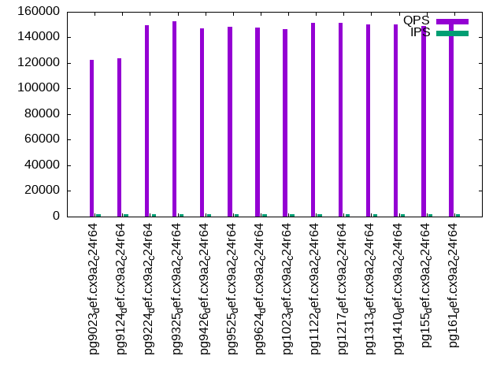

This is a report for the insert benchmark with 320M docs and 16 client(s). It is generated by scripts (bash, awk, sed) and Tufte might not be impressed. An overview of the insert benchmark is here and a short update is here. Below, by DBMS, I mean DBMS+version.config. An example is my8020.c10b40 where my means MySQL, 8020 is version 8.0.20 and c10b40 is the name for the configuration file.
The test server has 24 cores, 2 sockets, 64G RAM and an NVMe SSD. It is described here as the SuperMicro SuperWorkstation 7049A-T. The benchmark was run with 16 clients and there were 1 or 3 connections per client (1 for queries or inserts without rate limits, 1+1 for rate limited inserts+deletes). It uses a table per client. It loads 20M rows per table without secondary indexes, creates 3 secondary indexes per table, then inserts 20m rows per table with a delete per insert to avoid growing the table. It then does 6 read+write tests for 1800s each that do queries as fast as possible with 100,100,500,500,1000,1000 inserts/s and the same for deletes/s per client concurrent with the queries. The database is cached in memory. Clients and the DBMS share one server. The per-database configs are in the per-database subdirectories here.
The tested DBMS are:
The numbers are inserts/s for l.i0, l.i1 and l.i2, indexed docs (or rows) /s for l.x and queries/s for qr100, qp100 thru qr1000, qp1000" The values are the average rate over the entire test for inserts (IPS) and queries (QPS). The range of values for IPS and QPS is split into 3 parts: bottom 25%, middle 50%, top 25%. Values in the bottom 25% have a red background, values in the top 25% have a green background and values in the middle have no color. A gray background is used for values that can be ignored because the DBMS did not sustain the target insert rate. Red backgrounds are not used when the minimum value is within 80% of the max value.
| dbms | l.i0 | l.x | l.i1 | l.i2 | qr100 | qp100 | qr500 | qp500 | qr1000 | qp1000 |
|---|---|---|---|---|---|---|---|---|---|---|
| pg9023_def.cx9a2_c24r64 | 375587 | 1904762 | 17979 | 21978 | 122454 | 54245 | 109445 | 51242 | 99249 | 43399 |
| pg9124_def.cx9a2_c24r64 | 357143 | 1939394 | 18214 | 20350 | 123496 | 56446 | 112741 | 53728 | 100307 | 49986 |
| pg9224_def.cx9a2_c24r64 | 372526 | 1939394 | 23279 | 24806 | 149233 | 68267 | 137099 | 59127 | 139632 | 50829 |
| pg9325_def.cx9a2_c24r64 | 361991 | 1807910 | 27275 | 24521 | 152422 | 64479 | 126104 | 54290 | 119657 | 47461 |
| pg9426_def.cx9a2_c24r64 | 941176 | 1608041 | 76555 | 20612 | 147055 | 64069 | 129596 | 51765 | 111138 | 45047 |
| pg9525_def.cx9a2_c24r64 | 1015873 | 1545894 | 125922 | 45390 | 148201 | 69846 | 141184 | 67157 | 140643 | 61270 |
| pg9624_def.cx9a2_c24r64 | 1028939 | 1693122 | 126295 | 25817 | 147532 | 69214 | 140542 | 67067 | 139258 | 62821 |
| pg1023_def.cx9a2_c24r64 | 1088435 | 1777778 | 128708 | 34707 | 146673 | 68512 | 139883 | 65904 | 140994 | 61283 |
| pg1122_def.cx9a2_c24r64 | 1185185 | 2012579 | 165161 | 35242 | 151179 | 68711 | 141962 | 66040 | 143886 | 62572 |
| pg1217_def.cx9a2_c24r64 | 1163636 | 1975309 | 166342 | 45230 | 151136 | 68826 | 145811 | 66650 | 145306 | 63467 |
| pg1313_def.cx9a2_c24r64 | 1159420 | 2064517 | 176430 | 43185 | 150114 | 69169 | 143653 | 66816 | 145982 | 63910 |
| pg1410_def.cx9a2_c24r64 | 1130742 | 1987578 | 187271 | 53827 | 150051 | 68815 | 145424 | 66944 | 147563 | 63910 |
| pg155_def.cx9a2_c24r64 | 1155235 | 2000001 | 182206 | 44168 | 148684 | 68521 | 145357 | 66410 | 146510 | 63398 |
| pg161_def.cx9a2_c24r64 | 1172161 | 2222223 | 187271 | 47128 | 151186 | 67724 | 146514 | 65903 | 148211 | 63150 |
This table has relative throughput, throughput for the DBMS relative to the DBMS in the first line, using the absolute throughput from the previous table. Values less than 0.95 have a yellow background. Values greater than 1.05 have a blue background.
| dbms | l.i0 | l.x | l.i1 | l.i2 | qr100 | qp100 | qr500 | qp500 | qr1000 | qp1000 |
|---|---|---|---|---|---|---|---|---|---|---|
| pg9023_def.cx9a2_c24r64 | 1.00 | 1.00 | 1.00 | 1.00 | 1.00 | 1.00 | 1.00 | 1.00 | 1.00 | 1.00 |
| pg9124_def.cx9a2_c24r64 | 0.95 | 1.02 | 1.01 | 0.93 | 1.01 | 1.04 | 1.03 | 1.05 | 1.01 | 1.15 |
| pg9224_def.cx9a2_c24r64 | 0.99 | 1.02 | 1.29 | 1.13 | 1.22 | 1.26 | 1.25 | 1.15 | 1.41 | 1.17 |
| pg9325_def.cx9a2_c24r64 | 0.96 | 0.95 | 1.52 | 1.12 | 1.24 | 1.19 | 1.15 | 1.06 | 1.21 | 1.09 |
| pg9426_def.cx9a2_c24r64 | 2.51 | 0.84 | 4.26 | 0.94 | 1.20 | 1.18 | 1.18 | 1.01 | 1.12 | 1.04 |
| pg9525_def.cx9a2_c24r64 | 2.70 | 0.81 | 7.00 | 2.07 | 1.21 | 1.29 | 1.29 | 1.31 | 1.42 | 1.41 |
| pg9624_def.cx9a2_c24r64 | 2.74 | 0.89 | 7.02 | 1.17 | 1.20 | 1.28 | 1.28 | 1.31 | 1.40 | 1.45 |
| pg1023_def.cx9a2_c24r64 | 2.90 | 0.93 | 7.16 | 1.58 | 1.20 | 1.26 | 1.28 | 1.29 | 1.42 | 1.41 |
| pg1122_def.cx9a2_c24r64 | 3.16 | 1.06 | 9.19 | 1.60 | 1.23 | 1.27 | 1.30 | 1.29 | 1.45 | 1.44 |
| pg1217_def.cx9a2_c24r64 | 3.10 | 1.04 | 9.25 | 2.06 | 1.23 | 1.27 | 1.33 | 1.30 | 1.46 | 1.46 |
| pg1313_def.cx9a2_c24r64 | 3.09 | 1.08 | 9.81 | 1.96 | 1.23 | 1.28 | 1.31 | 1.30 | 1.47 | 1.47 |
| pg1410_def.cx9a2_c24r64 | 3.01 | 1.04 | 10.42 | 2.45 | 1.23 | 1.27 | 1.33 | 1.31 | 1.49 | 1.47 |
| pg155_def.cx9a2_c24r64 | 3.08 | 1.05 | 10.13 | 2.01 | 1.21 | 1.26 | 1.33 | 1.30 | 1.48 | 1.46 |
| pg161_def.cx9a2_c24r64 | 3.12 | 1.17 | 10.42 | 2.14 | 1.23 | 1.25 | 1.34 | 1.29 | 1.49 | 1.46 |
This lists the average rate of inserts/s for the tests that do inserts concurrent with queries. For such tests the query rate is listed in the table above. The read+write tests are setup so that the insert rate should match the target rate every second. Cells that are not at least 95% of the target have a red background to indicate a failure to satisfy the target.
| dbms | qr100.L1 | qp100.L2 | qr500.L3 | qp500.L4 | qr1000.L5 | qp1000.L6 |
|---|---|---|---|---|---|---|
| pg9023_def.cx9a2_c24r64 | 1584 | 1585 | 7925 | 7925 | 15459 | 15695 |
| pg9124_def.cx9a2_c24r64 | 1585 | 1585 | 7925 | 7925 | 15451 | 15627 |
| pg9224_def.cx9a2_c24r64 | 1585 | 1585 | 7925 | 7921 | 15618 | 15509 |
| pg9325_def.cx9a2_c24r64 | 1584 | 1584 | 7925 | 7921 | 15500 | 15442 |
| pg9426_def.cx9a2_c24r64 | 1584 | 1585 | 7921 | 7921 | 15686 | 15678 |
| pg9525_def.cx9a2_c24r64 | 1584 | 1585 | 7925 | 7925 | 15850 | 15738 |
| pg9624_def.cx9a2_c24r64 | 1584 | 1585 | 7925 | 7925 | 15842 | 15842 |
| pg1023_def.cx9a2_c24r64 | 1585 | 1585 | 7921 | 7925 | 15850 | 15850 |
| pg1122_def.cx9a2_c24r64 | 1585 | 1584 | 7921 | 7921 | 15850 | 15850 |
| pg1217_def.cx9a2_c24r64 | 1584 | 1585 | 7925 | 7925 | 15850 | 15842 |
| pg1313_def.cx9a2_c24r64 | 1584 | 1585 | 7925 | 7925 | 15850 | 15850 |
| pg1410_def.cx9a2_c24r64 | 1584 | 1585 | 7925 | 7925 | 15850 | 15850 |
| pg155_def.cx9a2_c24r64 | 1584 | 1585 | 7925 | 7925 | 15850 | 15850 |
| pg161_def.cx9a2_c24r64 | 1584 | 1585 | 7921 | 7925 | 15850 | 15850 |
| target | 1600 | 1600 | 8000 | 8000 | 16000 | 16000 |
l.i0: load without secondary indexes. Graphs for performance per 1-second interval are here.
Average throughput:
Insert response time histogram: each cell has the percentage of responses that take <= the time in the header and max is the max response time in seconds. For the max column values in the top 25% of the range have a red background and in the bottom 25% of the range have a green background. The red background is not used when the min value is within 80% of the max value.
| dbms | 256us | 1ms | 4ms | 16ms | 64ms | 256ms | 1s | 4s | 16s | gt | max |
|---|---|---|---|---|---|---|---|---|---|---|---|
| pg9023_def.cx9a2_c24r64 | 0.625 | 45.096 | 53.964 | 0.315 | 0.036 | ||||||
| pg9124_def.cx9a2_c24r64 | 0.401 | 32.068 | 67.242 | 0.288 | 0.034 | ||||||
| pg9224_def.cx9a2_c24r64 | 0.340 | 38.460 | 61.201 | nonzero | 0.018 | ||||||
| pg9325_def.cx9a2_c24r64 | 0.377 | 34.153 | 65.470 | nonzero | 0.022 | ||||||
| pg9426_def.cx9a2_c24r64 | 5.279 | 93.840 | 0.880 | 0.001 | 0.030 | ||||||
| pg9525_def.cx9a2_c24r64 | 20.614 | 78.723 | 0.614 | 0.030 | 0.020 | 0.131 | |||||
| pg9624_def.cx9a2_c24r64 | 17.283 | 82.147 | 0.536 | 0.019 | 0.015 | nonzero | 1.382 | ||||
| pg1023_def.cx9a2_c24r64 | 22.112 | 77.558 | 0.305 | 0.011 | 0.014 | 0.138 | |||||
| pg1122_def.cx9a2_c24r64 | 67.361 | 32.278 | 0.329 | 0.017 | 0.015 | 0.216 | |||||
| pg1217_def.cx9a2_c24r64 | 65.290 | 34.330 | 0.351 | 0.011 | 0.018 | 0.163 | |||||
| pg1313_def.cx9a2_c24r64 | 64.408 | 35.107 | 0.450 | 0.020 | 0.015 | 0.135 | |||||
| pg1410_def.cx9a2_c24r64 | 60.047 | 39.490 | 0.432 | 0.013 | 0.018 | 0.133 | |||||
| pg155_def.cx9a2_c24r64 | 63.934 | 35.626 | 0.406 | 0.016 | 0.018 | 0.159 | |||||
| pg161_def.cx9a2_c24r64 | 66.438 | 33.154 | 0.377 | 0.014 | 0.018 | 0.158 |
Performance metrics for the DBMS listed above. Some are normalized by throughput, others are not. Legend for results is here.
ips qps rps rmbps wps wmbps rpq rkbpq wpi wkbpi csps cpups cspq cpupq dbgb1 dbgb2 rss maxop p50 p99 tag 375587 0 0 0.0 1877.6 156.8 0.000 0.000 0.005 0.427 386977 33.1 1.030 21 30.6 30.8 0.6 0.036 23674 22476 pg9023_def.cx9a2_c24r64 357143 0 0 0.0 1860.3 149.7 0.000 0.000 0.005 0.429 387109 32.8 1.084 22 30.6 30.8 0.4 0.034 22384 21277 pg9124_def.cx9a2_c24r64 372526 0 0 0.0 5199.9 155.0 0.000 0.000 0.014 0.426 393006 34.8 1.055 22 30.6 30.8 0.5 0.018 23484 22675 pg9224_def.cx9a2_c24r64 361991 0 0 0.0 5147.7 169.7 0.000 0.000 0.014 0.480 396782 34.1 1.096 23 30.6 30.9 1.6 0.022 23275 20385 pg9325_def.cx9a2_c24r64 941176 0 0 0.0 6879.5 424.0 0.000 0.000 0.007 0.461 178893 75.0 0.190 19 30.6 30.9 4.0 0.030 61932 57237 pg9426_def.cx9a2_c24r64 1015873 0 0 0.0 2686.2 482.3 0.000 0.000 0.003 0.486 153876 74.7 0.151 18 30.6 82.8 10.5 0.131 68049 43952 pg9525_def.cx9a2_c24r64 1028939 0 0 0.0 1430.8 500.6 0.000 0.000 0.001 0.498 149434 76.4 0.145 18 30.6 83.3 4.4 1.382 70324 52343 pg9624_def.cx9a2_c24r64 1088435 0 1 0.0 1498.9 522.2 0.000 0.000 0.001 0.491 111140 79.1 0.102 17 30.6 83.3 13.7 0.138 73920 57737 pg1023_def.cx9a2_c24r64 1185185 0 0 0.0 1512.3 553.2 0.000 0.000 0.001 0.478 106771 78.8 0.090 16 30.6 83.1 9.4 0.216 80613 60655 pg1122_def.cx9a2_c24r64 1163636 0 1 0.0 1499.1 544.2 0.000 0.000 0.001 0.479 107298 78.3 0.092 16 30.6 83.2 12.8 0.163 79214 59535 pg1217_def.cx9a2_c24r64 1159420 0 1 0.0 1499.4 545.7 0.000 0.000 0.001 0.482 115644 78.1 0.100 16 30.6 83.4 0.6 0.135 79214 58237 pg1313_def.cx9a2_c24r64 1130742 0 0 0.0 1488.8 537.7 0.000 0.000 0.001 0.487 116410 78.4 0.103 17 30.6 83.6 0.1 0.133 76916 59435 pg1410_def.cx9a2_c24r64 1155235 0 0 0.0 1519.9 547.6 0.000 0.000 0.001 0.485 114975 78.7 0.100 16 30.6 83.6 3.3 0.159 78942 57457 pg155_def.cx9a2_c24r64 1172161 0 0 0.0 1525.6 555.6 0.000 0.000 0.001 0.485 110255 78.8 0.094 16 30.6 83.5 2.3 0.158 81311 60234 pg161_def.cx9a2_c24r64
l.x: create secondary indexes.
Average throughput:
Performance metrics for the DBMS listed above. Some are normalized by throughput, others are not. Legend for results is here.
ips qps rps rmbps wps wmbps rpq rkbpq wpi wkbpi csps cpups cspq cpupq dbgb1 dbgb2 rss maxop p50 p99 tag 1904762 0 0 0.0 3799.8 594.7 0.000 0.000 0.002 0.320 19299 53.7 0.010 7 61.5 61.7 2.9 0.005 NA NA pg9023_def.cx9a2_c24r64 1939394 0 1 0.0 3345.8 603.8 0.000 0.000 0.002 0.319 19530 53.5 0.010 7 61.5 61.7 2.9 0.005 NA NA pg9124_def.cx9a2_c24r64 1939394 0 1 0.0 3422.5 607.2 0.000 0.000 0.002 0.321 19902 53.0 0.010 7 61.5 61.7 2.9 0.004 NA NA pg9224_def.cx9a2_c24r64 1807910 0 1 0.0 3203.5 610.6 0.000 0.000 0.002 0.346 22758 52.8 0.013 7 61.5 61.7 14.1 0.005 NA NA pg9325_def.cx9a2_c24r64 1608041 0 1 0.0 3003.8 531.7 0.000 0.000 0.002 0.339 25522 54.7 0.016 8 61.5 61.7 14.1 0.003 NA NA pg9426_def.cx9a2_c24r64 1545894 0 3754 29.2 1619.0 615.3 0.002 0.019 0.001 0.408 26114 48.0 0.017 7 61.5 125.6 14.0 0.020 NA NA pg9525_def.cx9a2_c24r64 1693122 0 2144 29.1 2080.4 675.0 0.001 0.018 0.001 0.408 41120 40.0 0.024 6 61.5 125.6 13.7 0.023 NA NA pg9624_def.cx9a2_c24r64 1777778 0 1845 21.9 2118.9 708.9 0.001 0.013 0.001 0.408 43121 35.3 0.024 5 61.5 125.6 13.8 0.039 NA NA pg1023_def.cx9a2_c24r64 2012579 0 2045 21.8 2450.7 725.1 0.001 0.011 0.001 0.369 50420 39.3 0.025 5 61.5 125.6 13.7 0.007 NA NA pg1122_def.cx9a2_c24r64 1975309 0 1174 26.0 2441.9 718.7 0.001 0.013 0.001 0.373 46911 39.5 0.024 5 61.5 125.5 13.8 0.020 NA NA pg1217_def.cx9a2_c24r64 2064517 0 1142 19.7 1741.2 734.6 0.001 0.010 0.001 0.364 44456 42.0 0.022 5 61.5 125.5 13.7 0.004 NA NA pg1313_def.cx9a2_c24r64 1987578 0 1963 18.5 1656.8 698.4 0.001 0.010 0.001 0.360 45414 41.2 0.023 5 61.5 125.5 13.7 0.003 NA NA pg1410_def.cx9a2_c24r64 2000001 0 1354 22.7 1706.6 708.8 0.001 0.012 0.001 0.363 47112 40.7 0.024 5 61.5 125.5 13.8 0.003 NA NA pg155_def.cx9a2_c24r64 2222223 0 2526 23.6 1849.3 784.7 0.001 0.011 0.001 0.362 47342 41.6 0.021 4 61.5 125.5 13.7 0.004 NA NA pg161_def.cx9a2_c24r64
l.i1: continue load after secondary indexes created with 50 inserts per transaction. Graphs for performance per 1-second interval are here.
Average throughput:
Insert response time histogram: each cell has the percentage of responses that take <= the time in the header and max is the max response time in seconds. For the max column values in the top 25% of the range have a red background and in the bottom 25% of the range have a green background. The red background is not used when the min value is within 80% of the max value.
| dbms | 256us | 1ms | 4ms | 16ms | 64ms | 256ms | 1s | 4s | 16s | gt | max |
|---|---|---|---|---|---|---|---|---|---|---|---|
| pg9023_def.cx9a2_c24r64 | 0.010 | 1.248 | 78.799 | 19.935 | 0.006 | 0.003 | 1.565 | ||||
| pg9124_def.cx9a2_c24r64 | 0.016 | 2.897 | 77.462 | 19.615 | 0.007 | 0.003 | 1.449 | ||||
| pg9224_def.cx9a2_c24r64 | 0.013 | 4.533 | 88.360 | 7.086 | 0.006 | 0.003 | 1.466 | ||||
| pg9325_def.cx9a2_c24r64 | 0.015 | 13.278 | 83.170 | 3.528 | 0.005 | 0.004 | 1.516 | ||||
| pg9426_def.cx9a2_c24r64 | 53.597 | 34.452 | 11.124 | 0.823 | 0.005 | nonzero | 1.356 | ||||
| pg9525_def.cx9a2_c24r64 | 77.887 | 17.749 | 4.170 | 0.190 | 0.002 | 0.002 | 1.455 | ||||
| pg9624_def.cx9a2_c24r64 | 79.667 | 15.951 | 4.219 | 0.154 | 0.005 | 0.004 | 1.626 | ||||
| pg1023_def.cx9a2_c24r64 | 79.060 | 16.614 | 4.039 | 0.284 | 0.002 | 0.001 | 1.422 | ||||
| pg1122_def.cx9a2_c24r64 | 85.035 | 12.559 | 2.372 | 0.033 | 0.001 | nonzero | 1.189 | ||||
| pg1217_def.cx9a2_c24r64 | 80.018 | 17.415 | 2.541 | 0.025 | nonzero | nonzero | 1.511 | ||||
| pg1313_def.cx9a2_c24r64 | 84.135 | 13.853 | 1.980 | 0.031 | 0.001 | nonzero | 1.304 | ||||
| pg1410_def.cx9a2_c24r64 | 83.919 | 13.755 | 2.302 | 0.024 | nonzero | 0.001 | 1.397 | ||||
| pg155_def.cx9a2_c24r64 | 82.653 | 14.997 | 2.341 | 0.008 | nonzero | nonzero | 1.374 | ||||
| pg161_def.cx9a2_c24r64 | 0.001 | 84.244 | 13.742 | 2.004 | 0.008 | 0.001 | 0.941 |
Delete response time histogram: each cell has the percentage of responses that take <= the time in the header and max is the max response time in seconds. For the max column values in the top 25% of the range have a red background and in the bottom 25% of the range have a green background. The red background is not used when the min value is within 80% of the max value.
| dbms | 256us | 1ms | 4ms | 16ms | 64ms | 256ms | 1s | 4s | 16s | gt | max |
|---|---|---|---|---|---|---|---|---|---|---|---|
| pg9023_def.cx9a2_c24r64 | 0.007 | 0.514 | 47.635 | 38.985 | 12.155 | 0.704 | 0.001 | 0.001 | 1.517 | ||
| pg9124_def.cx9a2_c24r64 | 0.016 | 0.647 | 49.271 | 34.931 | 14.128 | 1.004 | 0.003 | 0.001 | 1.373 | ||
| pg9224_def.cx9a2_c24r64 | 0.015 | 0.832 | 57.632 | 32.247 | 8.892 | 0.380 | 0.001 | 0.001 | 1.429 | ||
| pg9325_def.cx9a2_c24r64 | 0.034 | 0.978 | 61.875 | 28.897 | 7.995 | 0.217 | 0.004 | 0.002 | 2.401 | ||
| pg9426_def.cx9a2_c24r64 | 19.535 | 56.964 | 8.036 | 3.818 | 11.184 | 0.458 | 0.004 | 0.001 | nonzero | 6.916 | |
| pg9525_def.cx9a2_c24r64 | 29.280 | 50.461 | 11.505 | 2.325 | 6.208 | 0.215 | 0.003 | 0.001 | 3.633 | ||
| pg9624_def.cx9a2_c24r64 | 30.465 | 48.819 | 11.497 | 2.560 | 6.524 | 0.128 | 0.004 | 0.003 | nonzero | 6.886 | |
| pg1023_def.cx9a2_c24r64 | 34.218 | 47.389 | 10.295 | 2.468 | 5.346 | 0.280 | 0.002 | 0.001 | nonzero | 6.189 | |
| pg1122_def.cx9a2_c24r64 | 41.602 | 41.622 | 9.399 | 2.878 | 4.469 | 0.029 | 0.001 | nonzero | 1.203 | ||
| pg1217_def.cx9a2_c24r64 | 31.920 | 48.877 | 9.608 | 7.196 | 2.379 | 0.020 | nonzero | nonzero | 1.506 | ||
| pg1313_def.cx9a2_c24r64 | 34.870 | 46.125 | 8.143 | 9.267 | 1.576 | 0.018 | nonzero | nonzero | 1.307 | ||
| pg1410_def.cx9a2_c24r64 | 30.655 | 47.727 | 12.268 | 8.170 | 1.167 | 0.012 | nonzero | 1.395 | |||
| pg155_def.cx9a2_c24r64 | 24.716 | 53.362 | 11.705 | 9.326 | 0.889 | 0.003 | nonzero | nonzero | 1.375 | ||
| pg161_def.cx9a2_c24r64 | 27.450 | 51.316 | 11.345 | 8.776 | 1.108 | 0.005 | nonzero | 0.942 |
Performance metrics for the DBMS listed above. Some are normalized by throughput, others are not. Legend for results is here.
ips qps rps rmbps wps wmbps rpq rkbpq wpi wkbpi csps cpups cspq cpupq dbgb1 dbgb2 rss maxop p50 p99 tag 17979 0 901 25.7 29990.5 731.6 0.050 1.463 1.668 41.672 111284 28.3 6.190 378 79.5 95.9 2.0 1.565 1049 549 pg9023_def.cx9a2_c24r64 18214 0 846 25.6 30446.8 742.3 0.046 1.440 1.672 41.731 115305 27.7 6.331 365 79.4 96.9 4.1 1.449 1049 548 pg9124_def.cx9a2_c24r64 23279 0 1093 32.5 37765.8 930.5 0.047 1.430 1.622 40.933 151410 32.3 6.504 333 79.5 98.4 2.3 1.466 1399 649 pg9224_def.cx9a2_c24r64 27275 0 1147 34.3 37594.8 967.0 0.042 1.289 1.378 36.305 176581 33.5 6.474 295 80.5 105.9 9.0 1.516 1642 649 pg9325_def.cx9a2_c24r64 76555 0 3120 99.0 26901.7 848.0 0.041 1.324 0.351 11.343 102121 52.4 1.334 164 85.9 86.1 20.7 1.356 2297 649 pg9426_def.cx9a2_c24r64 125922 0 5083 171.7 23505.9 773.1 0.040 1.396 0.187 6.287 113649 61.4 0.903 117 88.8 152.8 19.8 1.455 4048 599 pg9525_def.cx9a2_c24r64 126295 0 4891 166.0 5645.1 786.9 0.039 1.346 0.045 6.380 109566 59.9 0.868 114 88.3 164.0 43.6 1.626 7786 598 pg9624_def.cx9a2_c24r64 128708 0 5238 183.3 4748.8 764.5 0.041 1.458 0.037 6.082 88363 59.2 0.687 110 92.2 160.3 21.1 1.422 6199 547 pg1023_def.cx9a2_c24r64 165161 0 6223 212.0 3607.4 602.4 0.038 1.314 0.022 3.735 102822 67.9 0.623 99 88.8 152.9 26.8 1.189 5693 949 pg1122_def.cx9a2_c24r64 166342 0 5790 203.6 3451.3 598.4 0.035 1.253 0.021 3.684 108080 68.1 0.650 98 85.6 149.6 10.3 1.511 8840 1447 pg1217_def.cx9a2_c24r64 176430 0 5937 193.9 3116.5 536.1 0.034 1.126 0.018 3.111 110957 69.8 0.629 95 85.0 149.0 26.4 1.304 6692 1198 pg1313_def.cx9a2_c24r64 187271 0 6360 182.6 3037.7 530.1 0.034 0.998 0.016 2.899 121891 66.5 0.651 85 82.0 146.0 30.2 1.397 9588 1348 pg1410_def.cx9a2_c24r64 182206 0 6200 178.9 2996.6 520.2 0.034 1.005 0.016 2.923 117147 66.9 0.643 88 81.4 145.4 19.4 1.374 14490 1699 pg155_def.cx9a2_c24r64 187271 0 6869 185.8 3038.5 520.1 0.037 1.016 0.016 2.844 117039 68.2 0.625 87 81.5 145.6 40.9 0.941 15132 1848 pg161_def.cx9a2_c24r64
l.i2: continue load after secondary indexes created with 5 inserts per transaction. Graphs for performance per 1-second interval are here.
Average throughput:
Insert response time histogram: each cell has the percentage of responses that take <= the time in the header and max is the max response time in seconds. For the max column values in the top 25% of the range have a red background and in the bottom 25% of the range have a green background. The red background is not used when the min value is within 80% of the max value.
| dbms | 256us | 1ms | 4ms | 16ms | 64ms | 256ms | 1s | 4s | 16s | gt | max |
|---|---|---|---|---|---|---|---|---|---|---|---|
| pg9023_def.cx9a2_c24r64 | 0.010 | 25.051 | 70.660 | 2.294 | 1.873 | 0.111 | nonzero | nonzero | 1.225 | ||
| pg9124_def.cx9a2_c24r64 | 0.007 | 17.770 | 76.513 | 3.308 | 2.246 | 0.156 | nonzero | nonzero | 1.395 | ||
| pg9224_def.cx9a2_c24r64 | 0.003 | 18.616 | 78.658 | 1.689 | 0.945 | 0.090 | nonzero | nonzero | 1.656 | ||
| pg9325_def.cx9a2_c24r64 | 0.001 | 18.242 | 78.321 | 2.444 | 0.940 | 0.052 | 0.001 | nonzero | 1.647 | ||
| pg9426_def.cx9a2_c24r64 | 0.142 | 88.923 | 10.363 | 0.316 | 0.241 | 0.016 | nonzero | nonzero | 1.424 | ||
| pg9525_def.cx9a2_c24r64 | 28.099 | 69.563 | 2.276 | 0.040 | 0.019 | 0.002 | nonzero | nonzero | 1.164 | ||
| pg9624_def.cx9a2_c24r64 | 36.656 | 61.502 | 1.799 | 0.041 | 0.002 | nonzero | nonzero | 0.538 | |||
| pg1023_def.cx9a2_c24r64 | 32.239 | 66.029 | 1.705 | 0.025 | 0.002 | 0.051 | |||||
| pg1122_def.cx9a2_c24r64 | 45.046 | 53.338 | 1.610 | 0.006 | nonzero | nonzero | nonzero | nonzero | 1.240 | ||
| pg1217_def.cx9a2_c24r64 | 37.090 | 60.179 | 2.722 | 0.009 | nonzero | nonzero | nonzero | nonzero | 1.177 | ||
| pg1313_def.cx9a2_c24r64 | 46.739 | 52.097 | 1.160 | 0.003 | nonzero | nonzero | nonzero | 1.334 | |||
| pg1410_def.cx9a2_c24r64 | 31.209 | 66.188 | 2.576 | 0.026 | 0.001 | nonzero | nonzero | nonzero | 1.196 | ||
| pg155_def.cx9a2_c24r64 | 36.608 | 62.114 | 1.257 | 0.020 | nonzero | nonzero | nonzero | nonzero | 1.343 | ||
| pg161_def.cx9a2_c24r64 | 37.044 | 61.598 | 1.343 | 0.015 | nonzero | nonzero | 1.173 |
Delete response time histogram: each cell has the percentage of responses that take <= the time in the header and max is the max response time in seconds. For the max column values in the top 25% of the range have a red background and in the bottom 25% of the range have a green background. The red background is not used when the min value is within 80% of the max value.
| dbms | 256us | 1ms | 4ms | 16ms | 64ms | 256ms | 1s | 4s | 16s | gt | max |
|---|---|---|---|---|---|---|---|---|---|---|---|
| pg9023_def.cx9a2_c24r64 | 33.191 | 40.368 | 8.288 | 16.186 | 1.865 | 0.101 | nonzero | nonzero | 1.225 | ||
| pg9124_def.cx9a2_c24r64 | 25.712 | 45.342 | 11.579 | 15.404 | 1.847 | 0.117 | nonzero | nonzero | 1.392 | ||
| pg9224_def.cx9a2_c24r64 | 32.885 | 40.174 | 10.018 | 15.937 | 0.895 | 0.091 | nonzero | nonzero | 1.658 | ||
| pg9325_def.cx9a2_c24r64 | 28.832 | 47.295 | 8.605 | 14.590 | 0.634 | 0.044 | nonzero | nonzero | 1.647 | ||
| pg9426_def.cx9a2_c24r64 | 71.865 | 9.705 | 2.133 | 10.840 | 5.402 | 0.054 | 0.001 | nonzero | 1.433 | ||
| pg9525_def.cx9a2_c24r64 | 74.191 | 12.066 | 5.926 | 6.938 | 0.874 | 0.004 | nonzero | nonzero | 1.182 | ||
| pg9624_def.cx9a2_c24r64 | 70.914 | 13.620 | 6.493 | 8.032 | 0.939 | 0.001 | 0.001 | 0.547 | |||
| pg1023_def.cx9a2_c24r64 | 69.862 | 14.907 | 5.220 | 8.896 | 1.115 | nonzero | nonzero | 0.288 | |||
| pg1122_def.cx9a2_c24r64 | 70.942 | 14.372 | 4.780 | 9.273 | 0.633 | nonzero | 0.001 | nonzero | 1.248 | ||
| pg1217_def.cx9a2_c24r64 | 69.548 | 16.149 | 5.359 | 8.914 | 0.029 | 0.001 | nonzero | 1.099 | |||
| pg1313_def.cx9a2_c24r64 | 71.494 | 12.353 | 3.907 | 12.231 | 0.014 | nonzero | nonzero | 1.338 | |||
| pg1410_def.cx9a2_c24r64 | 64.113 | 16.666 | 11.327 | 7.889 | 0.005 | nonzero | nonzero | nonzero | 1.226 | ||
| pg155_def.cx9a2_c24r64 | 69.994 | 12.676 | 8.307 | 8.969 | 0.055 | nonzero | nonzero | nonzero | 1.351 | ||
| pg161_def.cx9a2_c24r64 | 67.992 | 14.172 | 8.173 | 9.631 | 0.031 | nonzero | 1.221 |
Performance metrics for the DBMS listed above. Some are normalized by throughput, others are not. Legend for results is here.
ips qps rps rmbps wps wmbps rpq rkbpq wpi wkbpi csps cpups cspq cpupq dbgb1 dbgb2 rss maxop p50 p99 tag 21978 0 973 40.6 31819.9 768.7 0.044 1.894 1.448 35.815 179261 52.1 8.156 569 82.7 82.9 2.4 1.225 1154 320 pg9023_def.cx9a2_c24r64 20350 0 881 37.6 31386.0 747.1 0.043 1.894 1.542 37.596 172086 48.9 8.456 577 82.7 82.9 4.6 1.395 1159 350 pg9124_def.cx9a2_c24r64 24806 0 1095 44.7 40657.8 954.5 0.044 1.845 1.639 39.403 203705 57.5 8.212 556 82.8 83.1 3.1 1.656 1585 380 pg9224_def.cx9a2_c24r64 24521 0 904 40.3 38376.2 889.3 0.037 1.682 1.565 37.139 210017 53.5 8.565 524 83.7 84.0 11.2 1.647 1373 385 pg9325_def.cx9a2_c24r64 20612 0 756 35.3 25789.0 593.8 0.037 1.751 1.251 29.502 95238 59.2 4.621 689 88.3 88.5 18.9 1.424 240 145 pg9426_def.cx9a2_c24r64 45390 0 1722 78.1 8358.9 216.0 0.038 1.761 0.184 4.872 159139 63.1 3.506 334 91.1 161.7 18.0 1.164 1938 150 pg9525_def.cx9a2_c24r64 25817 0 902 45.3 1020.1 127.2 0.035 1.795 0.040 5.044 94464 38.7 3.659 360 90.7 155.3 9.5 0.538 630 185 pg9624_def.cx9a2_c24r64 34707 0 1550 64.5 1642.6 172.3 0.045 1.902 0.047 5.084 121123 51.2 3.490 354 94.2 158.2 15.9 0.051 1964 205 pg1023_def.cx9a2_c24r64 35242 0 1338 61.1 590.3 101.2 0.038 1.776 0.017 2.940 125594 49.1 3.564 334 90.9 155.0 33.0 1.240 2707 235 pg1122_def.cx9a2_c24r64 45230 0 1486 69.2 708.0 125.4 0.033 1.566 0.016 2.840 164331 55.4 3.633 294 87.6 151.7 13.6 1.177 725 430 pg1217_def.cx9a2_c24r64 43185 0 1302 62.0 703.1 114.4 0.030 1.471 0.016 2.712 154060 59.3 3.567 330 86.7 150.8 3.0 1.334 1597 395 pg1313_def.cx9a2_c24r64 53827 0 1578 68.1 789.4 155.7 0.029 1.295 0.015 2.963 182470 61.0 3.390 272 84.1 148.2 25.8 1.196 2367 360 pg1410_def.cx9a2_c24r64 44168 0 1361 59.8 689.4 118.2 0.031 1.386 0.016 2.740 164663 57.0 3.728 310 83.9 148.0 5.6 1.343 824 579 pg155_def.cx9a2_c24r64 47128 0 1685 63.5 732.6 136.3 0.036 1.380 0.016 2.963 165432 60.6 3.510 309 83.9 147.9 26.2 1.173 584 370 pg161_def.cx9a2_c24r64
qr100.L1: range queries with 100 insert/s per client. Graphs for performance per 1-second interval are here.
Average throughput:
Query response time histogram: each cell has the percentage of responses that take <= the time in the header and max is the max response time in seconds. For max values in the top 25% of the range have a red background and in the bottom 25% of the range have a green background. The red background is not used when the min value is within 80% of the max value.
| dbms | 256us | 1ms | 4ms | 16ms | 64ms | 256ms | 1s | 4s | 16s | gt | max |
|---|---|---|---|---|---|---|---|---|---|---|---|
| pg9023_def.cx9a2_c24r64 | 99.696 | 0.258 | 0.044 | 0.001 | nonzero | nonzero | nonzero | 0.699 | |||
| pg9124_def.cx9a2_c24r64 | 99.699 | 0.255 | 0.044 | 0.001 | nonzero | nonzero | 0.105 | ||||
| pg9224_def.cx9a2_c24r64 | 99.941 | 0.047 | 0.010 | 0.001 | nonzero | 0.027 | |||||
| pg9325_def.cx9a2_c24r64 | 99.935 | 0.053 | 0.010 | 0.001 | nonzero | nonzero | nonzero | nonzero | 1.118 | ||
| pg9426_def.cx9a2_c24r64 | 99.959 | 0.032 | 0.009 | nonzero | nonzero | nonzero | nonzero | nonzero | 1.249 | ||
| pg9525_def.cx9a2_c24r64 | 99.983 | 0.016 | 0.001 | nonzero | nonzero | 0.024 | |||||
| pg9624_def.cx9a2_c24r64 | 99.973 | 0.023 | 0.004 | nonzero | nonzero | 0.024 | |||||
| pg1023_def.cx9a2_c24r64 | 99.972 | 0.023 | 0.004 | nonzero | nonzero | 0.020 | |||||
| pg1122_def.cx9a2_c24r64 | 99.975 | 0.021 | 0.004 | nonzero | nonzero | 0.022 | |||||
| pg1217_def.cx9a2_c24r64 | 99.975 | 0.022 | 0.003 | nonzero | nonzero | 0.024 | |||||
| pg1313_def.cx9a2_c24r64 | 99.973 | 0.024 | 0.004 | nonzero | nonzero | 0.026 | |||||
| pg1410_def.cx9a2_c24r64 | 99.975 | 0.021 | 0.004 | nonzero | nonzero | 0.027 | |||||
| pg155_def.cx9a2_c24r64 | 99.974 | 0.022 | 0.004 | nonzero | nonzero | 0.024 | |||||
| pg161_def.cx9a2_c24r64 | 99.978 | 0.018 | 0.003 | nonzero | 0.016 |
Insert response time histogram: each cell has the percentage of responses that take <= the time in the header and max is the max response time in seconds. For max values in the top 25% of the range have a red background and in the bottom 25% of the range have a green background. The red background is not used when the min value is within 80% of the max value.
| dbms | 256us | 1ms | 4ms | 16ms | 64ms | 256ms | 1s | 4s | 16s | gt | max |
|---|---|---|---|---|---|---|---|---|---|---|---|
| pg9023_def.cx9a2_c24r64 | 47.655 | 52.238 | 0.082 | 0.026 | 0.739 | ||||||
| pg9124_def.cx9a2_c24r64 | 43.785 | 56.118 | 0.097 | 0.133 | |||||||
| pg9224_def.cx9a2_c24r64 | 17.052 | 82.856 | 0.092 | 0.153 | |||||||
| pg9325_def.cx9a2_c24r64 | 47.405 | 52.365 | 0.167 | 0.040 | 0.024 | 1.152 | |||||
| pg9426_def.cx9a2_c24r64 | 0.003 | 99.661 | 0.158 | 0.024 | 0.097 | 0.056 | 1.983 | ||||
| pg9525_def.cx9a2_c24r64 | 99.321 | 0.677 | 0.002 | 0.021 | |||||||
| pg9624_def.cx9a2_c24r64 | 99.149 | 0.851 | 0.015 | ||||||||
| pg1023_def.cx9a2_c24r64 | 99.094 | 0.906 | 0.013 | ||||||||
| pg1122_def.cx9a2_c24r64 | 99.351 | 0.649 | 0.013 | ||||||||
| pg1217_def.cx9a2_c24r64 | 99.064 | 0.936 | 0.013 | ||||||||
| pg1313_def.cx9a2_c24r64 | 99.365 | 0.634 | 0.002 | 0.019 | |||||||
| pg1410_def.cx9a2_c24r64 | 99.526 | 0.474 | 0.013 | ||||||||
| pg155_def.cx9a2_c24r64 | 99.446 | 0.554 | 0.015 | ||||||||
| pg161_def.cx9a2_c24r64 | 99.575 | 0.425 | 0.013 |
Delete response time histogram: each cell has the percentage of responses that take <= the time in the header and max is the max response time in seconds. For max values in the top 25% of the range have a red background and in the bottom 25% of the range have a green background. The red background is not used when the min value is within 80% of the max value.
| dbms | 256us | 1ms | 4ms | 16ms | 64ms | 256ms | 1s | 4s | 16s | gt | max |
|---|---|---|---|---|---|---|---|---|---|---|---|
| pg9023_def.cx9a2_c24r64 | 0.325 | 9.076 | 54.280 | 34.078 | 2.220 | 0.016 | 0.005 | 0.393 | |||
| pg9124_def.cx9a2_c24r64 | 0.241 | 10.017 | 57.524 | 30.920 | 1.288 | 0.009 | 0.110 | ||||
| pg9224_def.cx9a2_c24r64 | 0.472 | 6.323 | 40.809 | 52.061 | 0.335 | 0.028 | |||||
| pg9325_def.cx9a2_c24r64 | 0.474 | 8.259 | 54.479 | 36.035 | 0.672 | 0.036 | 0.045 | 0.948 | |||
| pg9426_def.cx9a2_c24r64 | 0.632 | 22.366 | 74.665 | 2.144 | 0.043 | 0.023 | 0.099 | 0.028 | 1.258 | ||
| pg9525_def.cx9a2_c24r64 | 0.941 | 25.660 | 72.858 | 0.542 | 0.009 | ||||||
| pg9624_def.cx9a2_c24r64 | 0.807 | 19.611 | 72.873 | 6.708 | 0.011 | ||||||
| pg1023_def.cx9a2_c24r64 | 0.538 | 23.576 | 75.115 | 0.771 | 0.015 | ||||||
| pg1122_def.cx9a2_c24r64 | 0.637 | 26.451 | 72.498 | 0.413 | 0.008 | ||||||
| pg1217_def.cx9a2_c24r64 | 0.990 | 49.675 | 49.245 | 0.090 | 0.006 | ||||||
| pg1313_def.cx9a2_c24r64 | 0.970 | 42.727 | 56.214 | 0.089 | 0.011 | ||||||
| pg1410_def.cx9a2_c24r64 | 1.189 | 38.484 | 59.115 | 1.212 | 0.013 | ||||||
| pg155_def.cx9a2_c24r64 | 1.016 | 27.689 | 53.512 | 17.776 | 0.007 | 0.030 | |||||
| pg161_def.cx9a2_c24r64 | 1.116 | 30.811 | 51.929 | 16.137 | 0.007 | 0.030 |
Performance metrics for the DBMS listed above. Some are normalized by throughput, others are not. Legend for results is here.
ips qps rps rmbps wps wmbps rpq rkbpq wpi wkbpi csps cpups cspq cpupq dbgb1 dbgb2 rss maxop p50 p99 tag 1584 122454 612 5.2 5169.9 70.9 0.005 0.043 3.264 45.830 489454 65.3 3.997 128 82.7 83.0 1.7 0.699 7752 6137 pg9023_def.cx9a2_c24r64 1585 123496 615 5.3 5081.5 74.6 0.005 0.044 3.206 48.216 485011 65.1 3.927 127 82.7 82.9 1.7 0.105 7656 6792 pg9124_def.cx9a2_c24r64 1585 149233 17 0.3 5241.8 71.2 0.000 0.002 3.307 46.015 524382 67.4 3.514 108 82.8 83.0 0.1 0.027 9350 9125 pg9224_def.cx9a2_c24r64 1584 152422 21 0.3 6192.5 76.4 0.000 0.002 3.909 49.356 527748 67.4 3.462 106 83.7 84.0 0.8 1.118 9589 9158 pg9325_def.cx9a2_c24r64 1584 147055 19 0.3 6114.0 74.1 0.000 0.002 3.860 47.892 516929 67.3 3.515 110 88.3 88.5 0.8 1.249 9282 8986 pg9426_def.cx9a2_c24r64 1584 148201 20 0.4 436.6 12.8 0.000 0.003 0.276 8.269 524359 67.3 3.538 109 91.1 155.2 48.8 0.024 9222 9062 pg9525_def.cx9a2_c24r64 1584 147532 20 0.3 142.5 12.7 0.000 0.002 0.090 8.217 530116 66.2 3.593 108 90.7 154.7 48.7 0.024 9238 9030 pg9624_def.cx9a2_c24r64 1585 146673 25 0.4 146.3 12.2 0.000 0.003 0.092 7.852 527545 66.1 3.597 108 94.2 158.2 48.7 0.020 9130 8950 pg1023_def.cx9a2_c24r64 1585 151179 21 0.3 149.0 12.9 0.000 0.002 0.094 8.304 539327 66.3 3.567 105 90.9 155.0 48.7 0.022 9446 9238 pg1122_def.cx9a2_c24r64 1584 151136 19 0.3 144.0 13.0 0.000 0.002 0.091 8.426 536627 66.2 3.551 105 87.6 151.6 48.7 0.024 9382 9158 pg1217_def.cx9a2_c24r64 1584 150114 17 0.3 129.5 12.8 0.000 0.002 0.082 8.250 538206 66.3 3.585 106 86.8 150.8 48.7 0.026 9494 9225 pg1313_def.cx9a2_c24r64 1584 150051 19 0.4 143.6 13.5 0.000 0.002 0.091 8.709 540228 66.3 3.600 106 84.1 148.2 48.6 0.027 9462 9286 pg1410_def.cx9a2_c24r64 1584 148684 20 0.5 143.0 13.6 0.000 0.003 0.090 8.784 534303 66.3 3.594 107 83.9 147.9 48.6 0.024 9478 9302 pg155_def.cx9a2_c24r64 1584 151186 17 0.4 139.3 13.5 0.000 0.003 0.088 8.713 541493 66.3 3.582 105 83.9 147.9 3.6 0.016 9382 9222 pg161_def.cx9a2_c24r64
qp100.L2: point queries with 100 insert/s per client. Graphs for performance per 1-second interval are here.
Average throughput:
Query response time histogram: each cell has the percentage of responses that take <= the time in the header and max is the max response time in seconds. For max values in the top 25% of the range have a red background and in the bottom 25% of the range have a green background. The red background is not used when the min value is within 80% of the max value.
| dbms | 256us | 1ms | 4ms | 16ms | 64ms | 256ms | 1s | 4s | 16s | gt | max |
|---|---|---|---|---|---|---|---|---|---|---|---|
| pg9023_def.cx9a2_c24r64 | 83.093 | 16.442 | 0.461 | 0.004 | nonzero | 0.033 | |||||
| pg9124_def.cx9a2_c24r64 | 82.950 | 16.706 | 0.342 | 0.002 | nonzero | 0.028 | |||||
| pg9224_def.cx9a2_c24r64 | 97.290 | 2.367 | 0.339 | 0.004 | 0.015 | ||||||
| pg9325_def.cx9a2_c24r64 | 96.629 | 2.815 | 0.542 | 0.014 | 0.001 | nonzero | 0.073 | ||||
| pg9426_def.cx9a2_c24r64 | 96.532 | 2.755 | 0.690 | 0.021 | 0.001 | nonzero | nonzero | 0.435 | |||
| pg9525_def.cx9a2_c24r64 | 98.069 | 1.736 | 0.193 | 0.002 | nonzero | 0.025 | |||||
| pg9624_def.cx9a2_c24r64 | 96.522 | 3.317 | 0.161 | 0.001 | nonzero | 0.026 | |||||
| pg1023_def.cx9a2_c24r64 | 96.502 | 3.318 | 0.180 | 0.001 | nonzero | 0.019 | |||||
| pg1122_def.cx9a2_c24r64 | 96.697 | 3.133 | 0.170 | 0.001 | nonzero | 0.025 | |||||
| pg1217_def.cx9a2_c24r64 | 96.818 | 2.970 | 0.211 | nonzero | 0.012 | ||||||
| pg1313_def.cx9a2_c24r64 | 96.930 | 2.868 | 0.201 | 0.001 | 0.009 | ||||||
| pg1410_def.cx9a2_c24r64 | 96.762 | 3.064 | 0.174 | nonzero | 0.011 | ||||||
| pg155_def.cx9a2_c24r64 | 96.879 | 2.910 | 0.210 | 0.001 | nonzero | 0.017 | |||||
| pg161_def.cx9a2_c24r64 | 96.635 | 3.203 | 0.161 | 0.001 | nonzero | 0.023 |
Insert response time histogram: each cell has the percentage of responses that take <= the time in the header and max is the max response time in seconds. For max values in the top 25% of the range have a red background and in the bottom 25% of the range have a green background. The red background is not used when the min value is within 80% of the max value.
| dbms | 256us | 1ms | 4ms | 16ms | 64ms | 256ms | 1s | 4s | 16s | gt | max |
|---|---|---|---|---|---|---|---|---|---|---|---|
| pg9023_def.cx9a2_c24r64 | 11.056 | 88.674 | 0.271 | 0.140 | |||||||
| pg9124_def.cx9a2_c24r64 | 18.483 | 81.316 | 0.201 | 0.107 | |||||||
| pg9224_def.cx9a2_c24r64 | 6.373 | 93.519 | 0.108 | 0.114 | |||||||
| pg9325_def.cx9a2_c24r64 | 9.220 | 90.130 | 0.649 | 0.111 | |||||||
| pg9426_def.cx9a2_c24r64 | 31.382 | 68.302 | 0.285 | 0.031 | 0.402 | ||||||
| pg9525_def.cx9a2_c24r64 | 0.415 | 96.474 | 3.069 | 0.042 | 0.121 | ||||||
| pg9624_def.cx9a2_c24r64 | 0.524 | 99.005 | 0.470 | 0.027 | |||||||
| pg1023_def.cx9a2_c24r64 | 0.345 | 99.245 | 0.410 | 0.027 | |||||||
| pg1122_def.cx9a2_c24r64 | 0.396 | 99.111 | 0.493 | 0.026 | |||||||
| pg1217_def.cx9a2_c24r64 | 0.785 | 99.010 | 0.205 | 0.024 | |||||||
| pg1313_def.cx9a2_c24r64 | 0.957 | 99.014 | 0.030 | 0.019 | |||||||
| pg1410_def.cx9a2_c24r64 | 0.759 | 98.931 | 0.311 | 0.024 | |||||||
| pg155_def.cx9a2_c24r64 | 1.061 | 98.760 | 0.179 | 0.029 | |||||||
| pg161_def.cx9a2_c24r64 | 2.345 | 97.549 | 0.106 | 0.022 |
Delete response time histogram: each cell has the percentage of responses that take <= the time in the header and max is the max response time in seconds. For max values in the top 25% of the range have a red background and in the bottom 25% of the range have a green background. The red background is not used when the min value is within 80% of the max value.
| dbms | 256us | 1ms | 4ms | 16ms | 64ms | 256ms | 1s | 4s | 16s | gt | max |
|---|---|---|---|---|---|---|---|---|---|---|---|
| pg9023_def.cx9a2_c24r64 | 12.491 | 35.589 | 35.885 | 15.531 | 0.503 | 0.031 | |||||
| pg9124_def.cx9a2_c24r64 | 11.061 | 41.071 | 30.238 | 17.312 | 0.318 | 0.035 | |||||
| pg9224_def.cx9a2_c24r64 | 11.424 | 39.750 | 33.019 | 15.585 | 0.222 | 0.023 | |||||
| pg9325_def.cx9a2_c24r64 | 13.549 | 42.549 | 29.358 | 14.495 | 0.050 | 0.026 | |||||
| pg9426_def.cx9a2_c24r64 | 28.858 | 56.674 | 6.398 | 7.979 | 0.064 | 0.028 | 0.367 | ||||
| pg9525_def.cx9a2_c24r64 | 40.528 | 47.500 | 5.021 | 6.927 | 0.024 | 0.023 | |||||
| pg9624_def.cx9a2_c24r64 | 40.243 | 51.630 | 0.927 | 7.186 | 0.014 | 0.018 | |||||
| pg1023_def.cx9a2_c24r64 | 39.335 | 47.736 | 5.517 | 7.394 | 0.017 | 0.019 | |||||
| pg1122_def.cx9a2_c24r64 | 39.130 | 47.889 | 6.170 | 6.793 | 0.017 | 0.019 | |||||
| pg1217_def.cx9a2_c24r64 | 38.271 | 46.970 | 14.634 | 0.125 | 0.016 | ||||||
| pg1313_def.cx9a2_c24r64 | 39.774 | 49.417 | 10.700 | 0.106 | 0.003 | 0.017 | |||||
| pg1410_def.cx9a2_c24r64 | 39.455 | 50.349 | 8.799 | 1.392 | 0.005 | 0.024 | |||||
| pg155_def.cx9a2_c24r64 | 41.774 | 46.641 | 7.807 | 3.767 | 0.010 | 0.032 | |||||
| pg161_def.cx9a2_c24r64 | 44.477 | 47.988 | 5.622 | 1.906 | 0.007 | 0.030 |
Performance metrics for the DBMS listed above. Some are normalized by throughput, others are not. Legend for results is here.
ips qps rps rmbps wps wmbps rpq rkbpq wpi wkbpi csps cpups cspq cpupq dbgb1 dbgb2 rss maxop p50 p99 tag 1585 54245 2674 21.5 5993.8 82.3 0.049 0.405 3.782 53.171 185325 84.9 3.416 376 82.7 83.0 3.9 0.033 3486 1055 pg9023_def.cx9a2_c24r64 1585 56446 2657 21.6 5990.9 82.9 0.047 0.392 3.780 53.552 254420 67.0 4.507 285 82.7 82.9 3.9 0.028 3628 1146 pg9124_def.cx9a2_c24r64 1585 68267 3647 29.8 5982.2 83.7 0.053 0.447 3.774 54.073 280039 67.5 4.102 237 82.8 83.0 1.2 0.015 4410 895 pg9224_def.cx9a2_c24r64 1584 64479 3602 29.2 8964.0 108.1 0.056 0.464 5.659 69.874 277453 67.6 4.303 252 83.7 84.0 4.7 0.073 4251 608 pg9325_def.cx9a2_c24r64 1585 64069 3812 30.9 8855.3 107.1 0.059 0.493 5.587 69.196 275628 67.0 4.302 251 88.3 88.5 0.8 0.435 4203 575 pg9426_def.cx9a2_c24r64 1585 69846 3884 31.9 2660.3 31.8 0.056 0.468 1.678 20.568 278560 68.5 3.988 235 91.1 155.2 48.8 0.025 4491 943 pg9525_def.cx9a2_c24r64 1585 69214 3736 30.5 2665.9 31.5 0.054 0.451 1.682 20.341 275906 68.1 3.986 236 90.7 154.7 48.7 0.026 4443 1039 pg9624_def.cx9a2_c24r64 1585 68512 3976 32.2 2844.8 32.5 0.058 0.481 1.795 21.016 273107 68.1 3.986 239 94.2 158.2 48.7 0.019 4395 831 pg1023_def.cx9a2_c24r64 1584 68711 3823 31.0 2691.7 31.5 0.056 0.461 1.699 20.382 273316 68.6 3.978 240 90.9 155.0 48.7 0.025 4443 1007 pg1122_def.cx9a2_c24r64 1585 68826 3807 30.6 2604.8 30.8 0.055 0.455 1.643 19.910 274480 68.2 3.988 238 87.6 151.6 48.7 0.012 4429 943 pg1217_def.cx9a2_c24r64 1585 69169 3778 30.5 2577.9 30.6 0.055 0.452 1.626 19.776 275345 68.2 3.981 237 86.8 147.7 48.7 0.009 4475 815 pg1313_def.cx9a2_c24r64 1585 68815 3646 29.5 2469.8 30.0 0.053 0.439 1.558 19.413 277030 68.0 4.026 237 84.1 148.2 48.6 0.011 4459 1055 pg1410_def.cx9a2_c24r64 1585 68521 3676 29.3 2483.0 30.0 0.054 0.438 1.567 19.391 271864 68.1 3.968 239 83.9 148.0 48.6 0.017 4413 1007 pg155_def.cx9a2_c24r64 1585 67724 3603 29.5 2483.2 30.0 0.053 0.446 1.567 19.376 265800 69.2 3.925 245 83.9 148.0 48.6 0.023 4348 1390 pg161_def.cx9a2_c24r64
qr500.L3: range queries with 500 insert/s per client. Graphs for performance per 1-second interval are here.
Average throughput:
Query response time histogram: each cell has the percentage of responses that take <= the time in the header and max is the max response time in seconds. For max values in the top 25% of the range have a red background and in the bottom 25% of the range have a green background. The red background is not used when the min value is within 80% of the max value.
| dbms | 256us | 1ms | 4ms | 16ms | 64ms | 256ms | 1s | 4s | 16s | gt | max |
|---|---|---|---|---|---|---|---|---|---|---|---|
| pg9023_def.cx9a2_c24r64 | 98.252 | 1.591 | 0.142 | 0.012 | 0.002 | nonzero | nonzero | 0.994 | |||
| pg9124_def.cx9a2_c24r64 | 98.569 | 1.278 | 0.140 | 0.010 | 0.002 | nonzero | nonzero | 0.908 | |||
| pg9224_def.cx9a2_c24r64 | 99.366 | 0.539 | 0.087 | 0.008 | nonzero | nonzero | nonzero | 0.537 | |||
| pg9325_def.cx9a2_c24r64 | 98.805 | 1.031 | 0.146 | 0.012 | 0.005 | nonzero | nonzero | nonzero | 1.093 | ||
| pg9426_def.cx9a2_c24r64 | 99.260 | 0.615 | 0.104 | 0.013 | 0.007 | 0.001 | nonzero | 0.709 | |||
| pg9525_def.cx9a2_c24r64 | 99.762 | 0.226 | 0.011 | 0.001 | nonzero | nonzero | nonzero | 1.152 | |||
| pg9624_def.cx9a2_c24r64 | 99.785 | 0.200 | 0.014 | 0.001 | nonzero | 0.033 | |||||
| pg1023_def.cx9a2_c24r64 | 99.754 | 0.231 | 0.014 | 0.001 | nonzero | nonzero | nonzero | 0.734 | |||
| pg1122_def.cx9a2_c24r64 | 99.768 | 0.218 | 0.014 | 0.001 | nonzero | nonzero | nonzero | 0.566 | |||
| pg1217_def.cx9a2_c24r64 | 99.798 | 0.188 | 0.013 | 0.001 | nonzero | nonzero | nonzero | 0.911 | |||
| pg1313_def.cx9a2_c24r64 | 99.799 | 0.189 | 0.012 | 0.001 | nonzero | nonzero | nonzero | 0.932 | |||
| pg1410_def.cx9a2_c24r64 | 99.797 | 0.189 | 0.013 | 0.001 | nonzero | nonzero | nonzero | nonzero | 1.305 | ||
| pg155_def.cx9a2_c24r64 | 99.816 | 0.171 | 0.012 | 0.001 | nonzero | nonzero | nonzero | nonzero | 1.002 | ||
| pg161_def.cx9a2_c24r64 | 99.811 | 0.177 | 0.012 | 0.001 | nonzero | nonzero | nonzero | 0.765 |
Insert response time histogram: each cell has the percentage of responses that take <= the time in the header and max is the max response time in seconds. For max values in the top 25% of the range have a red background and in the bottom 25% of the range have a green background. The red background is not used when the min value is within 80% of the max value.
| dbms | 256us | 1ms | 4ms | 16ms | 64ms | 256ms | 1s | 4s | 16s | gt | max |
|---|---|---|---|---|---|---|---|---|---|---|---|
| pg9023_def.cx9a2_c24r64 | 3.477 | 90.456 | 6.059 | 0.003 | 0.006 | 1.050 | |||||
| pg9124_def.cx9a2_c24r64 | 4.243 | 88.609 | 7.119 | 0.029 | 0.958 | ||||||
| pg9224_def.cx9a2_c24r64 | 0.001 | 3.135 | 93.479 | 3.369 | 0.016 | 0.572 | |||||
| pg9325_def.cx9a2_c24r64 | 2.586 | 93.773 | 3.598 | 0.024 | 0.019 | 1.467 | |||||
| pg9426_def.cx9a2_c24r64 | 0.700 | 72.369 | 26.055 | 0.862 | 0.009 | 0.005 | 1.204 | ||||
| pg9525_def.cx9a2_c24r64 | 43.842 | 50.810 | 5.316 | 0.022 | 0.001 | 0.009 | 1.189 | ||||
| pg9624_def.cx9a2_c24r64 | 60.004 | 39.673 | 0.323 | 0.046 | |||||||
| pg1023_def.cx9a2_c24r64 | 57.885 | 41.644 | 0.457 | 0.003 | 0.011 | 0.987 | |||||
| pg1122_def.cx9a2_c24r64 | 60.282 | 39.402 | 0.288 | 0.018 | 0.010 | 0.579 | |||||
| pg1217_def.cx9a2_c24r64 | 59.776 | 39.951 | 0.260 | 0.014 | 0.917 | ||||||
| pg1313_def.cx9a2_c24r64 | 64.366 | 35.465 | 0.156 | nonzero | 0.014 | 0.947 | |||||
| pg1410_def.cx9a2_c24r64 | 62.255 | 37.419 | 0.316 | 0.006 | 0.002 | 0.003 | 1.331 | ||||
| pg155_def.cx9a2_c24r64 | 64.165 | 35.691 | 0.125 | 0.011 | 0.006 | 0.002 | 1.009 | ||||
| pg161_def.cx9a2_c24r64 | 62.435 | 37.318 | 0.238 | 0.009 | 0.774 |
Delete response time histogram: each cell has the percentage of responses that take <= the time in the header and max is the max response time in seconds. For max values in the top 25% of the range have a red background and in the bottom 25% of the range have a green background. The red background is not used when the min value is within 80% of the max value.
| dbms | 256us | 1ms | 4ms | 16ms | 64ms | 256ms | 1s | 4s | 16s | gt | max |
|---|---|---|---|---|---|---|---|---|---|---|---|
| pg9023_def.cx9a2_c24r64 | 9.011 | 15.238 | 35.078 | 37.991 | 2.616 | 0.065 | 0.002 | 1.005 | |||
| pg9124_def.cx9a2_c24r64 | 9.599 | 13.866 | 35.794 | 37.822 | 2.759 | 0.153 | 0.006 | 0.919 | |||
| pg9224_def.cx9a2_c24r64 | 13.781 | 15.544 | 33.949 | 35.509 | 1.201 | 0.016 | 0.118 | ||||
| pg9325_def.cx9a2_c24r64 | 13.692 | 17.539 | 32.871 | 34.693 | 1.130 | 0.053 | 0.022 | 0.854 | |||
| pg9426_def.cx9a2_c24r64 | 55.123 | 23.441 | 16.960 | 3.912 | 0.510 | 0.052 | 0.002 | 0.709 | |||
| pg9525_def.cx9a2_c24r64 | 62.454 | 18.597 | 17.523 | 1.389 | 0.029 | 0.004 | 0.001 | 0.003 | 1.152 | ||
| pg9624_def.cx9a2_c24r64 | 62.912 | 17.297 | 16.223 | 3.484 | 0.084 | 0.043 | |||||
| pg1023_def.cx9a2_c24r64 | 62.648 | 17.932 | 18.445 | 0.960 | 0.013 | 0.001 | nonzero | 0.734 | |||
| pg1122_def.cx9a2_c24r64 | 63.722 | 18.624 | 16.932 | 0.702 | 0.016 | 0.005 | 0.233 | ||||
| pg1217_def.cx9a2_c24r64 | 63.338 | 26.250 | 10.110 | 0.278 | 0.016 | 0.001 | 0.008 | 0.909 | |||
| pg1313_def.cx9a2_c24r64 | 63.616 | 23.815 | 12.370 | 0.180 | 0.009 | 0.010 | 0.524 | ||||
| pg1410_def.cx9a2_c24r64 | 63.427 | 23.685 | 12.220 | 0.621 | 0.036 | 0.005 | 0.004 | 0.001 | 1.324 | ||
| pg155_def.cx9a2_c24r64 | 65.615 | 19.098 | 12.269 | 2.951 | 0.052 | 0.008 | 0.006 | 0.001 | 1.006 | ||
| pg161_def.cx9a2_c24r64 | 64.576 | 20.136 | 12.701 | 2.507 | 0.075 | 0.005 | 0.770 |
Performance metrics for the DBMS listed above. Some are normalized by throughput, others are not. Legend for results is here.
ips qps rps rmbps wps wmbps rpq rkbpq wpi wkbpi csps cpups cspq cpupq dbgb1 dbgb2 rss maxop p50 p99 tag 7925 109445 2810 39.4 21709.3 368.3 0.026 0.369 2.739 47.583 441636 69.5 4.035 152 83.2 83.5 7.0 0.994 6761 5722 pg9023_def.cx9a2_c24r64 7925 112741 2816 39.6 21708.7 371.2 0.025 0.360 2.739 47.958 444533 70.0 3.943 149 83.2 83.5 2.0 0.908 7084 5961 pg9124_def.cx9a2_c24r64 7925 137099 2742 37.8 22109.5 370.7 0.020 0.282 2.790 47.899 461864 72.3 3.369 127 83.3 83.6 7.4 0.537 8549 7400 pg9224_def.cx9a2_c24r64 7925 126104 2769 39.7 22975.4 401.6 0.022 0.322 2.899 51.891 452001 70.7 3.584 135 84.5 84.7 25.4 1.093 8151 3342 pg9325_def.cx9a2_c24r64 7921 129596 3153 43.5 23255.1 379.7 0.024 0.344 2.936 49.088 446555 70.0 3.446 130 88.8 89.0 28.1 0.709 8247 3931 pg9426_def.cx9a2_c24r64 7925 141184 3548 46.5 4694.3 56.1 0.025 0.337 0.592 7.252 485596 69.2 3.439 118 91.4 155.5 36.2 1.152 8662 8263 pg9525_def.cx9a2_c24r64 7925 140542 3302 44.8 2661.9 54.5 0.023 0.326 0.336 7.042 490362 68.0 3.489 116 90.9 154.9 35.8 0.033 8646 8071 pg9624_def.cx9a2_c24r64 7921 139883 3725 48.7 2971.2 57.5 0.027 0.357 0.375 7.436 489751 68.0 3.501 117 94.5 158.6 36.8 0.734 8694 8039 pg1023_def.cx9a2_c24r64 7921 141962 3410 45.6 2661.2 50.7 0.024 0.329 0.336 6.559 497469 68.0 3.504 115 91.2 153.7 34.1 0.566 8774 8183 pg1122_def.cx9a2_c24r64 7925 145811 3150 43.1 2575.6 49.8 0.022 0.302 0.325 6.432 505420 67.8 3.466 112 87.8 150.3 19.0 0.911 9126 8487 pg1217_def.cx9a2_c24r64 7925 143653 3043 42.1 2553.0 49.2 0.021 0.300 0.322 6.353 503079 67.8 3.502 113 87.1 145.1 30.9 0.932 8854 8314 pg1313_def.cx9a2_c24r64 7925 145424 2959 39.7 2603.2 50.4 0.020 0.279 0.328 6.507 511026 67.5 3.514 111 84.8 146.8 11.5 1.305 9030 8423 pg1410_def.cx9a2_c24r64 7925 145357 3035 41.6 2672.3 51.4 0.021 0.293 0.337 6.636 508942 67.6 3.501 112 84.5 146.1 1.6 1.002 9014 8455 pg155_def.cx9a2_c24r64 7921 146514 3111 41.6 2777.1 51.9 0.021 0.291 0.351 6.715 513452 67.7 3.504 111 84.5 146.5 3.2 0.765 9283 8455 pg161_def.cx9a2_c24r64
qp500.L4: point queries with 500 insert/s per client. Graphs for performance per 1-second interval are here.
Average throughput:
Query response time histogram: each cell has the percentage of responses that take <= the time in the header and max is the max response time in seconds. For max values in the top 25% of the range have a red background and in the bottom 25% of the range have a green background. The red background is not used when the min value is within 80% of the max value.
| dbms | 256us | 1ms | 4ms | 16ms | 64ms | 256ms | 1s | 4s | 16s | gt | max |
|---|---|---|---|---|---|---|---|---|---|---|---|
| pg9023_def.cx9a2_c24r64 | 79.749 | 18.826 | 1.408 | 0.016 | 0.001 | nonzero | nonzero | 1.147 | |||
| pg9124_def.cx9a2_c24r64 | 78.916 | 20.368 | 0.707 | 0.008 | nonzero | nonzero | nonzero | nonzero | 1.190 | ||
| pg9224_def.cx9a2_c24r64 | 91.925 | 7.295 | 0.738 | 0.040 | 0.001 | nonzero | nonzero | nonzero | 1.016 | ||
| pg9325_def.cx9a2_c24r64 | 88.978 | 9.832 | 1.123 | 0.048 | 0.018 | 0.001 | nonzero | nonzero | 1.195 | ||
| pg9426_def.cx9a2_c24r64 | 88.535 | 9.785 | 1.530 | 0.111 | 0.035 | 0.003 | nonzero | nonzero | 1.423 | ||
| pg9525_def.cx9a2_c24r64 | 96.115 | 3.608 | 0.273 | 0.004 | nonzero | nonzero | nonzero | 0.312 | |||
| pg9624_def.cx9a2_c24r64 | 94.644 | 5.133 | 0.222 | 0.001 | nonzero | nonzero | nonzero | 0.832 | |||
| pg1023_def.cx9a2_c24r64 | 94.515 | 5.231 | 0.254 | 0.001 | nonzero | nonzero | nonzero | 0.855 | |||
| pg1122_def.cx9a2_c24r64 | 94.644 | 5.126 | 0.229 | 0.001 | nonzero | nonzero | nonzero | 0.646 | |||
| pg1217_def.cx9a2_c24r64 | 95.045 | 4.673 | 0.281 | 0.001 | nonzero | nonzero | 0.180 | ||||
| pg1313_def.cx9a2_c24r64 | 95.115 | 4.619 | 0.265 | 0.001 | nonzero | nonzero | 0.170 | ||||
| pg1410_def.cx9a2_c24r64 | 95.092 | 4.724 | 0.183 | 0.001 | nonzero | nonzero | nonzero | 0.691 | |||
| pg155_def.cx9a2_c24r64 | 95.229 | 4.510 | 0.260 | 0.001 | nonzero | nonzero | 0.094 | ||||
| pg161_def.cx9a2_c24r64 | 95.079 | 4.722 | 0.198 | 0.001 | nonzero | nonzero | 0.100 |
Insert response time histogram: each cell has the percentage of responses that take <= the time in the header and max is the max response time in seconds. For max values in the top 25% of the range have a red background and in the bottom 25% of the range have a green background. The red background is not used when the min value is within 80% of the max value.
| dbms | 256us | 1ms | 4ms | 16ms | 64ms | 256ms | 1s | 4s | 16s | gt | max |
|---|---|---|---|---|---|---|---|---|---|---|---|
| pg9023_def.cx9a2_c24r64 | 1.371 | 87.476 | 11.115 | 0.033 | 0.006 | 1.394 | |||||
| pg9124_def.cx9a2_c24r64 | 10.085 | 82.447 | 7.439 | 0.024 | 0.005 | 1.264 | |||||
| pg9224_def.cx9a2_c24r64 | 20.024 | 75.162 | 4.778 | 0.024 | 0.011 | 1.557 | |||||
| pg9325_def.cx9a2_c24r64 | 1.119 | 90.280 | 8.580 | 0.008 | 0.014 | 1.385 | |||||
| pg9426_def.cx9a2_c24r64 | 18.113 | 77.634 | 4.217 | 0.013 | 0.024 | 1.461 | |||||
| pg9525_def.cx9a2_c24r64 | 0.573 | 71.831 | 27.347 | 0.250 | 0.250 | ||||||
| pg9624_def.cx9a2_c24r64 | 0.661 | 94.804 | 4.498 | 0.031 | 0.006 | 0.871 | |||||
| pg1023_def.cx9a2_c24r64 | 0.632 | 94.046 | 5.273 | 0.040 | 0.010 | 0.883 | |||||
| pg1122_def.cx9a2_c24r64 | 0.678 | 92.628 | 6.658 | 0.019 | 0.017 | 0.680 | |||||
| pg1217_def.cx9a2_c24r64 | 0.997 | 95.731 | 3.266 | 0.007 | 0.203 | ||||||
| pg1313_def.cx9a2_c24r64 | 1.041 | 96.044 | 2.903 | 0.006 | 0.006 | 0.264 | |||||
| pg1410_def.cx9a2_c24r64 | 1.041 | 96.572 | 2.365 | 0.015 | 0.008 | 0.723 | |||||
| pg155_def.cx9a2_c24r64 | 1.474 | 96.712 | 1.809 | 0.001 | 0.005 | 0.754 | |||||
| pg161_def.cx9a2_c24r64 | 1.128 | 96.201 | 2.671 | 0.063 |
Delete response time histogram: each cell has the percentage of responses that take <= the time in the header and max is the max response time in seconds. For max values in the top 25% of the range have a red background and in the bottom 25% of the range have a green background. The red background is not used when the min value is within 80% of the max value.
| dbms | 256us | 1ms | 4ms | 16ms | 64ms | 256ms | 1s | 4s | 16s | gt | max |
|---|---|---|---|---|---|---|---|---|---|---|---|
| pg9023_def.cx9a2_c24r64 | 17.401 | 18.917 | 31.170 | 28.514 | 3.965 | 0.020 | 0.012 | 0.532 | |||
| pg9124_def.cx9a2_c24r64 | 21.273 | 22.929 | 28.260 | 24.559 | 2.880 | 0.086 | 0.013 | 0.987 | |||
| pg9224_def.cx9a2_c24r64 | 32.139 | 25.474 | 25.574 | 16.654 | 0.107 | 0.044 | 0.003 | 0.004 | 1.417 | ||
| pg9325_def.cx9a2_c24r64 | 26.375 | 26.645 | 35.619 | 11.230 | 0.061 | 0.053 | 0.018 | 0.965 | |||
| pg9426_def.cx9a2_c24r64 | 63.983 | 28.983 | 4.833 | 1.794 | 0.333 | 0.053 | 0.015 | 0.007 | 1.269 | ||
| pg9525_def.cx9a2_c24r64 | 69.097 | 22.797 | 7.927 | 0.169 | 0.003 | 0.006 | 0.204 | ||||
| pg9624_def.cx9a2_c24r64 | 67.782 | 22.105 | 9.561 | 0.544 | 0.004 | 0.002 | 0.002 | 0.833 | |||
| pg1023_def.cx9a2_c24r64 | 69.741 | 21.111 | 8.944 | 0.201 | nonzero | 0.002 | 0.855 | ||||
| pg1122_def.cx9a2_c24r64 | 70.433 | 21.900 | 7.496 | 0.161 | 0.002 | 0.003 | 0.005 | 0.646 | |||
| pg1217_def.cx9a2_c24r64 | 69.772 | 27.868 | 2.348 | 0.010 | 0.001 | 0.001 | 0.122 | ||||
| pg1313_def.cx9a2_c24r64 | 69.576 | 26.462 | 3.943 | 0.016 | 0.003 | 0.031 | |||||
| pg1410_def.cx9a2_c24r64 | 65.330 | 27.740 | 5.781 | 0.774 | 0.372 | 0.001 | 0.002 | 0.694 | |||
| pg155_def.cx9a2_c24r64 | 65.436 | 23.491 | 6.435 | 4.610 | 0.028 | 0.058 | |||||
| pg161_def.cx9a2_c24r64 | 66.587 | 23.865 | 6.071 | 3.449 | 0.027 | 0.032 |
Performance metrics for the DBMS listed above. Some are normalized by throughput, others are not. Legend for results is here.
ips qps rps rmbps wps wmbps rpq rkbpq wpi wkbpi csps cpups cspq cpupq dbgb1 dbgb2 rss maxop p50 p99 tag 7925 51242 7695 84.9 23721.5 428.0 0.150 1.697 2.993 55.303 203006 86.4 3.962 405 83.7 84.0 3.0 1.147 3198 1438 pg9023_def.cx9a2_c24r64 7925 53728 7710 85.0 24157.0 402.5 0.144 1.619 3.048 52.003 265775 73.1 4.947 327 83.1 83.4 2.1 1.190 3343 1327 pg9124_def.cx9a2_c24r64 7921 59127 8299 89.5 24531.3 404.6 0.140 1.551 3.097 52.310 265068 72.4 4.483 294 83.1 83.4 1.0 1.016 3994 1231 pg9224_def.cx9a2_c24r64 7921 54290 8539 92.1 25160.8 491.0 0.157 1.736 3.177 63.481 261827 70.3 4.823 311 85.0 85.3 8.5 1.195 3740 783 pg9325_def.cx9a2_c24r64 7921 51765 9700 99.7 25216.7 472.0 0.187 1.972 3.184 61.018 247201 66.2 4.775 307 89.1 89.4 8.3 1.423 3628 544 pg9426_def.cx9a2_c24r64 7925 67157 10462 112.0 12163.6 124.9 0.156 1.707 1.535 16.144 272386 71.3 4.056 255 92.1 156.2 22.6 0.312 4395 1023 pg9525_def.cx9a2_c24r64 7925 67067 10267 110.5 11912.4 129.9 0.153 1.687 1.503 16.782 271807 70.7 4.053 253 91.7 165.1 8.1 0.832 4379 1359 pg9624_def.cx9a2_c24r64 7925 65904 11086 118.2 12939.5 138.5 0.168 1.837 1.633 17.902 266249 71.0 4.040 259 95.3 168.8 8.3 0.855 4299 1007 pg1023_def.cx9a2_c24r64 7921 66040 10504 112.0 12366.8 127.3 0.159 1.737 1.561 16.456 266203 71.1 4.031 258 91.7 153.4 22.6 0.646 4300 1327 pg1122_def.cx9a2_c24r64 7925 66650 9918 105.4 11858.1 123.1 0.149 1.620 1.496 15.910 268096 70.6 4.022 254 88.2 149.8 20.4 0.180 4363 1279 pg1217_def.cx9a2_c24r64 7925 66816 9729 103.4 11584.1 121.1 0.146 1.585 1.462 15.648 268835 70.5 4.024 253 87.8 145.4 18.9 0.170 4379 1374 pg1313_def.cx9a2_c24r64 7925 66944 9445 99.3 11365.9 116.7 0.141 1.520 1.434 15.082 271805 70.5 4.060 253 84.8 146.0 8.4 0.691 4331 1566 pg1410_def.cx9a2_c24r64 7925 66410 9418 98.3 11275.0 114.8 0.142 1.516 1.423 14.838 266046 70.5 4.006 255 84.7 145.5 6.6 0.094 4331 1502 pg155_def.cx9a2_c24r64 7925 65903 9483 100.0 11431.8 114.4 0.144 1.554 1.442 14.786 261024 71.5 3.961 260 84.7 145.9 19.1 0.100 4283 1630 pg161_def.cx9a2_c24r64
qr1000.L5: range queries with 1000 insert/s per client. Graphs for performance per 1-second interval are here.
Average throughput:
Query response time histogram: each cell has the percentage of responses that take <= the time in the header and max is the max response time in seconds. For max values in the top 25% of the range have a red background and in the bottom 25% of the range have a green background. The red background is not used when the min value is within 80% of the max value.
| dbms | 256us | 1ms | 4ms | 16ms | 64ms | 256ms | 1s | 4s | 16s | gt | max |
|---|---|---|---|---|---|---|---|---|---|---|---|
| pg9023_def.cx9a2_c24r64 | 96.516 | 3.203 | 0.253 | 0.016 | 0.012 | 0.001 | nonzero | nonzero | 1.459 | ||
| pg9124_def.cx9a2_c24r64 | 96.549 | 3.151 | 0.269 | 0.017 | 0.013 | 0.001 | nonzero | nonzero | 2.390 | ||
| pg9224_def.cx9a2_c24r64 | 99.096 | 0.771 | 0.119 | 0.011 | 0.002 | nonzero | nonzero | nonzero | 1.422 | ||
| pg9325_def.cx9a2_c24r64 | 98.467 | 1.285 | 0.203 | 0.024 | 0.020 | 0.001 | nonzero | nonzero | 1.444 | ||
| pg9426_def.cx9a2_c24r64 | 98.512 | 1.180 | 0.225 | 0.037 | 0.040 | 0.006 | nonzero | nonzero | 1.739 | ||
| pg9525_def.cx9a2_c24r64 | 99.666 | 0.312 | 0.018 | 0.003 | nonzero | nonzero | 0.162 | ||||
| pg9624_def.cx9a2_c24r64 | 99.671 | 0.293 | 0.031 | 0.005 | nonzero | nonzero | nonzero | nonzero | 1.444 | ||
| pg1023_def.cx9a2_c24r64 | 99.688 | 0.285 | 0.024 | 0.003 | nonzero | nonzero | nonzero | 0.785 | |||
| pg1122_def.cx9a2_c24r64 | 99.709 | 0.263 | 0.025 | 0.003 | nonzero | nonzero | 0.155 | ||||
| pg1217_def.cx9a2_c24r64 | 99.733 | 0.240 | 0.025 | 0.003 | nonzero | nonzero | 0.147 | ||||
| pg1313_def.cx9a2_c24r64 | 99.759 | 0.220 | 0.019 | 0.002 | nonzero | 0.040 | |||||
| pg1410_def.cx9a2_c24r64 | 99.750 | 0.223 | 0.024 | 0.003 | nonzero | nonzero | 0.087 | ||||
| pg155_def.cx9a2_c24r64 | 99.767 | 0.210 | 0.021 | 0.003 | nonzero | nonzero | 0.102 | ||||
| pg161_def.cx9a2_c24r64 | 99.769 | 0.205 | 0.023 | 0.003 | nonzero | nonzero | 0.098 |
Insert response time histogram: each cell has the percentage of responses that take <= the time in the header and max is the max response time in seconds. For max values in the top 25% of the range have a red background and in the bottom 25% of the range have a green background. The red background is not used when the min value is within 80% of the max value.
| dbms | 256us | 1ms | 4ms | 16ms | 64ms | 256ms | 1s | 4s | 16s | gt | max |
|---|---|---|---|---|---|---|---|---|---|---|---|
| pg9023_def.cx9a2_c24r64 | 2.233 | 32.148 | 55.751 | 9.855 | 0.006 | 0.006 | 1.509 | ||||
| pg9124_def.cx9a2_c24r64 | 1.546 | 30.581 | 57.814 | 10.028 | 0.013 | 0.018 | 2.436 | ||||
| pg9224_def.cx9a2_c24r64 | 1.948 | 43.185 | 50.861 | 3.986 | 0.016 | 0.003 | 1.471 | ||||
| pg9325_def.cx9a2_c24r64 | 1.495 | 32.214 | 61.211 | 5.033 | 0.012 | 0.034 | 1.763 | ||||
| pg9426_def.cx9a2_c24r64 | 16.904 | 57.860 | 21.219 | 3.978 | 0.022 | 0.017 | 1.890 | ||||
| pg9525_def.cx9a2_c24r64 | 68.490 | 20.195 | 11.261 | 0.054 | 0.137 | ||||||
| pg9624_def.cx9a2_c24r64 | 64.131 | 34.502 | 1.355 | 0.009 | nonzero | 0.003 | 1.556 | ||||
| pg1023_def.cx9a2_c24r64 | 70.233 | 28.778 | 0.987 | nonzero | 0.002 | 0.792 | |||||
| pg1122_def.cx9a2_c24r64 | 72.561 | 26.665 | 0.771 | 0.003 | 0.142 | ||||||
| pg1217_def.cx9a2_c24r64 | 69.225 | 30.073 | 0.701 | 0.002 | 0.129 | ||||||
| pg1313_def.cx9a2_c24r64 | 74.900 | 24.509 | 0.591 | 0.056 | |||||||
| pg1410_def.cx9a2_c24r64 | 69.285 | 30.066 | 0.649 | nonzero | 0.091 | ||||||
| pg155_def.cx9a2_c24r64 | 75.311 | 24.072 | 0.617 | 0.060 | |||||||
| pg161_def.cx9a2_c24r64 | 70.578 | 28.554 | 0.868 | nonzero | 0.070 |
Delete response time histogram: each cell has the percentage of responses that take <= the time in the header and max is the max response time in seconds. For max values in the top 25% of the range have a red background and in the bottom 25% of the range have a green background. The red background is not used when the min value is within 80% of the max value.
| dbms | 256us | 1ms | 4ms | 16ms | 64ms | 256ms | 1s | 4s | 16s | gt | max |
|---|---|---|---|---|---|---|---|---|---|---|---|
| pg9023_def.cx9a2_c24r64 | 10.818 | 21.655 | 38.755 | 25.007 | 3.488 | 0.271 | 0.005 | 0.001 | 1.468 | ||
| pg9124_def.cx9a2_c24r64 | 8.790 | 22.184 | 37.545 | 26.511 | 4.631 | 0.327 | 0.008 | 0.004 | 2.397 | ||
| pg9224_def.cx9a2_c24r64 | 18.685 | 25.244 | 30.900 | 23.985 | 1.077 | 0.103 | 0.004 | 0.002 | 1.427 | ||
| pg9325_def.cx9a2_c24r64 | 14.600 | 23.190 | 30.653 | 29.602 | 1.776 | 0.150 | 0.017 | 0.012 | 1.336 | ||
| pg9426_def.cx9a2_c24r64 | 38.906 | 34.380 | 16.057 | 8.312 | 1.911 | 0.415 | 0.013 | 0.007 | 1.727 | ||
| pg9525_def.cx9a2_c24r64 | 63.439 | 19.491 | 12.687 | 4.186 | 0.193 | 0.005 | 0.129 | ||||
| pg9624_def.cx9a2_c24r64 | 57.803 | 22.426 | 10.322 | 8.763 | 0.678 | 0.007 | 0.002 | 1.447 | |||
| pg1023_def.cx9a2_c24r64 | 63.826 | 19.465 | 11.695 | 4.770 | 0.244 | nonzero | 0.001 | 0.786 | |||
| pg1122_def.cx9a2_c24r64 | 62.515 | 19.503 | 12.792 | 4.941 | 0.247 | 0.001 | 0.141 | ||||
| pg1217_def.cx9a2_c24r64 | 60.574 | 24.328 | 13.463 | 1.526 | 0.107 | 0.001 | 0.127 | ||||
| pg1313_def.cx9a2_c24r64 | 63.920 | 21.444 | 13.356 | 1.215 | 0.065 | 0.040 | |||||
| pg1410_def.cx9a2_c24r64 | 60.251 | 25.653 | 11.930 | 2.093 | 0.073 | 0.050 | |||||
| pg155_def.cx9a2_c24r64 | 64.464 | 21.934 | 11.584 | 1.956 | 0.063 | 0.038 | |||||
| pg161_def.cx9a2_c24r64 | 62.422 | 21.699 | 13.910 | 1.880 | 0.089 | 0.036 |
Performance metrics for the DBMS listed above. Some are normalized by throughput, others are not. Legend for results is here.
ips qps rps rmbps wps wmbps rpq rkbpq wpi wkbpi csps cpups cspq cpupq dbgb1 dbgb2 rss maxop p50 p99 tag 15459 99249 3390 58.6 33738.1 687.0 0.034 0.605 2.182 45.506 415390 71.6 4.185 173 84.2 84.4 1.6 1.459 6236 4859 pg9023_def.cx9a2_c24r64 15451 100307 3358 59.1 33223.3 669.0 0.033 0.604 2.150 44.337 413313 71.5 4.120 171 84.1 84.3 4.3 2.390 6282 4571 pg9124_def.cx9a2_c24r64 15618 139632 3138 54.1 35591.9 711.4 0.022 0.397 2.279 46.640 428108 76.9 3.066 132 84.1 84.3 2.0 1.422 8885 6573 pg9224_def.cx9a2_c24r64 15500 119657 2966 42.2 34209.8 686.4 0.025 0.361 2.207 45.346 402921 71.7 3.367 144 85.7 86.0 15.5 1.444 7720 1630 pg9325_def.cx9a2_c24r64 15686 111138 3444 48.6 33943.4 646.4 0.031 0.447 2.164 42.196 359861 66.0 3.238 143 88.8 89.1 19.3 1.739 7735 863 pg9426_def.cx9a2_c24r64 15850 140643 3546 48.3 6410.9 91.0 0.025 0.352 0.404 5.878 472997 70.6 3.363 120 91.8 155.8 14.8 0.162 8701 8263 pg9525_def.cx9a2_c24r64 15842 139258 3413 46.8 2820.9 92.0 0.025 0.344 0.178 5.948 477524 69.4 3.429 120 91.1 155.2 21.2 1.444 8726 7719 pg9624_def.cx9a2_c24r64 15850 140994 3867 50.9 3435.9 97.1 0.027 0.370 0.217 6.272 478557 69.4 3.394 118 95.3 159.4 28.5 0.785 8726 8074 pg1023_def.cx9a2_c24r64 15850 143886 3553 48.1 2719.7 57.1 0.025 0.342 0.172 3.691 489763 69.3 3.404 116 91.4 152.1 4.2 0.155 9002 8411 pg1122_def.cx9a2_c24r64 15850 145306 3342 45.0 2707.2 56.9 0.023 0.317 0.171 3.676 494266 69.1 3.402 114 88.1 148.8 21.3 0.147 9018 8455 pg1217_def.cx9a2_c24r64 15850 145982 3306 45.2 2775.7 56.7 0.023 0.317 0.175 3.663 494923 69.2 3.390 114 87.9 145.1 8.3 0.040 9110 8555 pg1313_def.cx9a2_c24r64 15850 147563 3282 46.2 2771.7 57.4 0.022 0.320 0.175 3.708 501736 69.0 3.400 112 85.0 145.3 5.9 0.087 9197 8639 pg1410_def.cx9a2_c24r64 15850 146510 3165 47.8 2492.7 56.3 0.022 0.334 0.157 3.637 497388 69.1 3.395 113 84.9 145.0 9.7 0.102 9068 8294 pg155_def.cx9a2_c24r64 15850 148211 3213 47.2 2590.5 55.6 0.022 0.326 0.163 3.595 503339 69.0 3.396 112 85.0 145.4 20.1 0.098 9206 8263 pg161_def.cx9a2_c24r64
qp1000.L6: point queries with 1000 insert/s per client. Graphs for performance per 1-second interval are here.
Average throughput:
Query response time histogram: each cell has the percentage of responses that take <= the time in the header and max is the max response time in seconds. For max values in the top 25% of the range have a red background and in the bottom 25% of the range have a green background. The red background is not used when the min value is within 80% of the max value.
| dbms | 256us | 1ms | 4ms | 16ms | 64ms | 256ms | 1s | 4s | 16s | gt | max |
|---|---|---|---|---|---|---|---|---|---|---|---|
| pg9023_def.cx9a2_c24r64 | 72.004 | 24.660 | 3.273 | 0.063 | 0.001 | nonzero | nonzero | 0.577 | |||
| pg9124_def.cx9a2_c24r64 | 79.098 | 19.415 | 1.465 | 0.022 | 0.001 | nonzero | nonzero | 0.975 | |||
| pg9224_def.cx9a2_c24r64 | 83.929 | 14.227 | 1.752 | 0.091 | 0.001 | nonzero | nonzero | nonzero | 1.926 | ||
| pg9325_def.cx9a2_c24r64 | 81.620 | 16.209 | 2.022 | 0.125 | 0.021 | 0.003 | nonzero | 1.117 | |||
| pg9426_def.cx9a2_c24r64 | 80.877 | 15.911 | 3.011 | 0.162 | 0.034 | 0.004 | nonzero | nonzero | 1.784 | ||
| pg9525_def.cx9a2_c24r64 | 94.400 | 4.969 | 0.564 | 0.066 | 0.001 | 0.001 | nonzero | 0.446 | |||
| pg9624_def.cx9a2_c24r64 | 91.515 | 8.062 | 0.417 | 0.004 | nonzero | nonzero | nonzero | 0.347 | |||
| pg1023_def.cx9a2_c24r64 | 91.382 | 8.085 | 0.524 | 0.009 | nonzero | nonzero | nonzero | 0.305 | |||
| pg1122_def.cx9a2_c24r64 | 92.052 | 7.534 | 0.410 | 0.004 | nonzero | nonzero | nonzero | 0.272 | |||
| pg1217_def.cx9a2_c24r64 | 92.707 | 6.895 | 0.396 | 0.003 | nonzero | nonzero | 0.232 | ||||
| pg1313_def.cx9a2_c24r64 | 93.023 | 6.585 | 0.389 | 0.003 | nonzero | nonzero | 0.254 | ||||
| pg1410_def.cx9a2_c24r64 | 92.908 | 6.794 | 0.296 | 0.001 | nonzero | nonzero | 0.233 | ||||
| pg155_def.cx9a2_c24r64 | 92.853 | 6.867 | 0.279 | 0.001 | nonzero | nonzero | 0.118 | ||||
| pg161_def.cx9a2_c24r64 | 93.067 | 6.655 | 0.276 | 0.001 | nonzero | nonzero | 0.174 |
Insert response time histogram: each cell has the percentage of responses that take <= the time in the header and max is the max response time in seconds. For max values in the top 25% of the range have a red background and in the bottom 25% of the range have a green background. The red background is not used when the min value is within 80% of the max value.
| dbms | 256us | 1ms | 4ms | 16ms | 64ms | 256ms | 1s | 4s | 16s | gt | max |
|---|---|---|---|---|---|---|---|---|---|---|---|
| pg9023_def.cx9a2_c24r64 | 17.015 | 77.807 | 5.162 | 0.006 | 0.010 | 2.052 | |||||
| pg9124_def.cx9a2_c24r64 | 24.964 | 70.146 | 4.855 | 0.024 | 0.011 | 1.463 | |||||
| pg9224_def.cx9a2_c24r64 | nonzero | 16.716 | 78.902 | 4.334 | 0.024 | 0.023 | 2.466 | ||||
| pg9325_def.cx9a2_c24r64 | 0.001 | 6.350 | 87.044 | 6.602 | 0.003 | 0.001 | 1.159 | ||||
| pg9426_def.cx9a2_c24r64 | 0.031 | 18.125 | 78.750 | 3.030 | 0.034 | 0.032 | 2.284 | ||||
| pg9525_def.cx9a2_c24r64 | 1.528 | 75.885 | 21.401 | 1.186 | 0.001 | 0.703 | |||||
| pg9624_def.cx9a2_c24r64 | 0.922 | 77.714 | 21.108 | 0.237 | 0.018 | 0.001 | 1.580 | ||||
| pg1023_def.cx9a2_c24r64 | 0.805 | 75.681 | 23.279 | 0.228 | 0.008 | 0.777 | |||||
| pg1122_def.cx9a2_c24r64 | 0.941 | 77.416 | 21.487 | 0.150 | 0.005 | 0.662 | |||||
| pg1217_def.cx9a2_c24r64 | 1.269 | 85.378 | 13.331 | 0.022 | 0.177 | ||||||
| pg1313_def.cx9a2_c24r64 | 1.278 | 86.890 | 11.806 | 0.024 | 0.003 | 0.516 | |||||
| pg1410_def.cx9a2_c24r64 | 1.632 | 91.259 | 7.101 | 0.006 | 0.003 | 0.397 | |||||
| pg155_def.cx9a2_c24r64 | 1.511 | 93.447 | 5.025 | 0.017 | 0.139 | ||||||
| pg161_def.cx9a2_c24r64 | 1.625 | 94.836 | 3.537 | 0.001 | 0.074 |
Delete response time histogram: each cell has the percentage of responses that take <= the time in the header and max is the max response time in seconds. For max values in the top 25% of the range have a red background and in the bottom 25% of the range have a green background. The red background is not used when the min value is within 80% of the max value.
| dbms | 256us | 1ms | 4ms | 16ms | 64ms | 256ms | 1s | 4s | 16s | gt | max |
|---|---|---|---|---|---|---|---|---|---|---|---|
| pg9023_def.cx9a2_c24r64 | 14.820 | 35.446 | 24.681 | 20.028 | 4.861 | 0.159 | 0.003 | 0.001 | 1.430 | ||
| pg9124_def.cx9a2_c24r64 | 14.013 | 38.072 | 24.166 | 20.289 | 3.259 | 0.183 | 0.014 | 0.004 | 1.335 | ||
| pg9224_def.cx9a2_c24r64 | 18.846 | 39.439 | 19.319 | 21.435 | 0.820 | 0.124 | 0.007 | 0.010 | 1.825 | ||
| pg9325_def.cx9a2_c24r64 | 18.064 | 41.098 | 17.559 | 21.779 | 1.338 | 0.160 | 0.002 | nonzero | 1.117 | ||
| pg9426_def.cx9a2_c24r64 | 29.865 | 45.598 | 3.034 | 20.418 | 0.969 | 0.094 | 0.016 | 0.007 | 1.784 | ||
| pg9525_def.cx9a2_c24r64 | 41.299 | 36.634 | 13.399 | 8.631 | 0.017 | 0.020 | 0.001 | 0.691 | |||
| pg9624_def.cx9a2_c24r64 | 35.018 | 41.754 | 9.456 | 13.526 | 0.231 | 0.012 | 0.003 | 0.851 | |||
| pg1023_def.cx9a2_c24r64 | 32.002 | 44.887 | 11.168 | 11.771 | 0.156 | 0.015 | 0.001 | 0.763 | |||
| pg1122_def.cx9a2_c24r64 | 33.229 | 43.316 | 13.970 | 9.398 | 0.083 | 0.004 | 0.188 | ||||
| pg1217_def.cx9a2_c24r64 | 33.054 | 46.876 | 18.101 | 1.962 | 0.006 | 0.001 | 0.153 | ||||
| pg1313_def.cx9a2_c24r64 | 33.427 | 45.477 | 18.819 | 2.271 | 0.007 | 0.047 | |||||
| pg1410_def.cx9a2_c24r64 | 40.094 | 43.740 | 14.123 | 1.965 | 0.076 | 0.001 | 0.001 | 0.351 | |||
| pg155_def.cx9a2_c24r64 | 41.224 | 42.371 | 14.419 | 1.976 | 0.008 | 0.002 | 0.097 | ||||
| pg161_def.cx9a2_c24r64 | 39.405 | 43.530 | 15.922 | 1.139 | 0.004 | 0.055 |
Performance metrics for the DBMS listed above. Some are normalized by throughput, others are not. Legend for results is here.
ips qps rps rmbps wps wmbps rpq rkbpq wpi wkbpi csps cpups cspq cpupq dbgb1 dbgb2 rss maxop p50 p99 tag 15695 43399 14035 162.5 26077.2 580.5 0.323 3.835 1.662 37.875 222977 84.5 5.138 467 84.7 90.6 1.9 0.577 2862 639 pg9023_def.cx9a2_c24r64 15627 49986 14145 163.1 28397.3 608.7 0.283 3.341 1.817 39.888 281148 76.8 5.625 369 84.6 93.6 2.0 0.975 3358 799 pg9124_def.cx9a2_c24r64 15509 50829 14289 163.5 27200.0 590.4 0.281 3.294 1.754 38.985 268380 75.1 5.280 355 84.6 84.9 0.9 1.926 3452 384 pg9224_def.cx9a2_c24r64 15442 47461 15108 170.2 23037.9 515.9 0.318 3.672 1.492 34.208 262496 73.3 5.531 371 86.2 102.4 7.6 1.117 3294 304 pg9325_def.cx9a2_c24r64 15678 45047 16943 188.3 25692.0 547.3 0.376 4.280 1.639 35.748 252627 67.7 5.608 361 89.4 98.0 5.1 1.784 3133 192 pg9426_def.cx9a2_c24r64 15738 61270 18118 201.1 18794.9 207.8 0.296 3.360 1.194 13.521 251448 74.0 4.104 290 91.0 155.1 7.6 0.446 4187 384 pg9525_def.cx9a2_c24r64 15842 62821 18286 205.0 17451.6 225.7 0.291 3.342 1.102 14.586 258336 74.4 4.112 284 90.7 162.7 7.1 0.347 4158 767 pg9624_def.cx9a2_c24r64 15850 61283 19815 216.3 22565.3 262.3 0.323 3.615 1.424 16.948 251666 74.5 4.107 292 93.6 165.5 10.9 0.305 4075 607 pg1023_def.cx9a2_c24r64 15850 62572 18598 203.7 21586.2 215.5 0.297 3.334 1.362 13.920 255475 74.7 4.083 287 91.3 155.3 7.0 0.272 4109 831 pg1122_def.cx9a2_c24r64 15842 63467 17614 193.8 21185.3 217.0 0.278 3.127 1.337 14.026 258679 74.1 4.076 280 88.2 152.3 9.6 0.232 4187 927 pg1217_def.cx9a2_c24r64 15850 63910 17135 188.9 20846.4 214.7 0.268 3.026 1.315 13.868 259956 73.9 4.068 278 88.2 152.2 21.4 0.254 4219 1007 pg1313_def.cx9a2_c24r64 15850 63910 16469 176.4 20506.2 204.0 0.258 2.827 1.294 13.180 263120 73.8 4.117 277 85.3 149.4 11.6 0.233 4187 1071 pg1410_def.cx9a2_c24r64 15850 63398 16324 172.1 20867.9 205.2 0.257 2.780 1.317 13.258 256702 73.8 4.049 279 84.9 148.9 12.5 0.118 4142 1087 pg155_def.cx9a2_c24r64 15850 63150 16755 180.7 21112.0 204.8 0.265 2.931 1.332 13.234 253526 74.7 4.015 284 85.2 149.2 21.8 0.174 4125 1183 pg161_def.cx9a2_c24r64
l.i0: load without secondary indexes
Performance metrics for all DBMS, not just the ones listed above. Some are normalized by throughput, others are not. Legend for results is here.
ips qps rps rmbps wps wmbps rpq rkbpq wpi wkbpi csps cpups cspq cpupq dbgb1 dbgb2 rss maxop p50 p99 tag 375587 0 0 0.0 1877.6 156.8 0.000 0.000 0.005 0.427 386977 33.1 1.030 21 30.6 30.8 0.6 0.036 23674 22476 pg9023_def.cx9a2_c24r64 357143 0 0 0.0 1860.3 149.7 0.000 0.000 0.005 0.429 387109 32.8 1.084 22 30.6 30.8 0.4 0.034 22384 21277 pg9124_def.cx9a2_c24r64 372526 0 0 0.0 5199.9 155.0 0.000 0.000 0.014 0.426 393006 34.8 1.055 22 30.6 30.8 0.5 0.018 23484 22675 pg9224_def.cx9a2_c24r64 361991 0 0 0.0 5147.7 169.7 0.000 0.000 0.014 0.480 396782 34.1 1.096 23 30.6 30.9 1.6 0.022 23275 20385 pg9325_def.cx9a2_c24r64 941176 0 0 0.0 6879.5 424.0 0.000 0.000 0.007 0.461 178893 75.0 0.190 19 30.6 30.9 4.0 0.030 61932 57237 pg9426_def.cx9a2_c24r64 1015873 0 0 0.0 2686.2 482.3 0.000 0.000 0.003 0.486 153876 74.7 0.151 18 30.6 82.8 10.5 0.131 68049 43952 pg9525_def.cx9a2_c24r64 1028939 0 0 0.0 1430.8 500.6 0.000 0.000 0.001 0.498 149434 76.4 0.145 18 30.6 83.3 4.4 1.382 70324 52343 pg9624_def.cx9a2_c24r64 1088435 0 1 0.0 1498.9 522.2 0.000 0.000 0.001 0.491 111140 79.1 0.102 17 30.6 83.3 13.7 0.138 73920 57737 pg1023_def.cx9a2_c24r64 1185185 0 0 0.0 1512.3 553.2 0.000 0.000 0.001 0.478 106771 78.8 0.090 16 30.6 83.1 9.4 0.216 80613 60655 pg1122_def.cx9a2_c24r64 1163636 0 1 0.0 1499.1 544.2 0.000 0.000 0.001 0.479 107298 78.3 0.092 16 30.6 83.2 12.8 0.163 79214 59535 pg1217_def.cx9a2_c24r64 1159420 0 1 0.0 1499.4 545.7 0.000 0.000 0.001 0.482 115644 78.1 0.100 16 30.6 83.4 0.6 0.135 79214 58237 pg1313_def.cx9a2_c24r64 1130742 0 0 0.0 1488.8 537.7 0.000 0.000 0.001 0.487 116410 78.4 0.103 17 30.6 83.6 0.1 0.133 76916 59435 pg1410_def.cx9a2_c24r64 1155235 0 0 0.0 1519.9 547.6 0.000 0.000 0.001 0.485 114975 78.7 0.100 16 30.6 83.6 3.3 0.159 78942 57457 pg155_def.cx9a2_c24r64 1172161 0 0 0.0 1525.6 555.6 0.000 0.000 0.001 0.485 110255 78.8 0.094 16 30.6 83.5 2.3 0.158 81311 60234 pg161_def.cx9a2_c24r64
l.x: create secondary indexes
Performance metrics for all DBMS, not just the ones listed above. Some are normalized by throughput, others are not. Legend for results is here.
ips qps rps rmbps wps wmbps rpq rkbpq wpi wkbpi csps cpups cspq cpupq dbgb1 dbgb2 rss maxop p50 p99 tag 1904762 0 0 0.0 3799.8 594.7 0.000 0.000 0.002 0.320 19299 53.7 0.010 7 61.5 61.7 2.9 0.005 NA NA pg9023_def.cx9a2_c24r64 1939394 0 1 0.0 3345.8 603.8 0.000 0.000 0.002 0.319 19530 53.5 0.010 7 61.5 61.7 2.9 0.005 NA NA pg9124_def.cx9a2_c24r64 1939394 0 1 0.0 3422.5 607.2 0.000 0.000 0.002 0.321 19902 53.0 0.010 7 61.5 61.7 2.9 0.004 NA NA pg9224_def.cx9a2_c24r64 1807910 0 1 0.0 3203.5 610.6 0.000 0.000 0.002 0.346 22758 52.8 0.013 7 61.5 61.7 14.1 0.005 NA NA pg9325_def.cx9a2_c24r64 1608041 0 1 0.0 3003.8 531.7 0.000 0.000 0.002 0.339 25522 54.7 0.016 8 61.5 61.7 14.1 0.003 NA NA pg9426_def.cx9a2_c24r64 1545894 0 3754 29.2 1619.0 615.3 0.002 0.019 0.001 0.408 26114 48.0 0.017 7 61.5 125.6 14.0 0.020 NA NA pg9525_def.cx9a2_c24r64 1693122 0 2144 29.1 2080.4 675.0 0.001 0.018 0.001 0.408 41120 40.0 0.024 6 61.5 125.6 13.7 0.023 NA NA pg9624_def.cx9a2_c24r64 1777778 0 1845 21.9 2118.9 708.9 0.001 0.013 0.001 0.408 43121 35.3 0.024 5 61.5 125.6 13.8 0.039 NA NA pg1023_def.cx9a2_c24r64 2012579 0 2045 21.8 2450.7 725.1 0.001 0.011 0.001 0.369 50420 39.3 0.025 5 61.5 125.6 13.7 0.007 NA NA pg1122_def.cx9a2_c24r64 1975309 0 1174 26.0 2441.9 718.7 0.001 0.013 0.001 0.373 46911 39.5 0.024 5 61.5 125.5 13.8 0.020 NA NA pg1217_def.cx9a2_c24r64 2064517 0 1142 19.7 1741.2 734.6 0.001 0.010 0.001 0.364 44456 42.0 0.022 5 61.5 125.5 13.7 0.004 NA NA pg1313_def.cx9a2_c24r64 1987578 0 1963 18.5 1656.8 698.4 0.001 0.010 0.001 0.360 45414 41.2 0.023 5 61.5 125.5 13.7 0.003 NA NA pg1410_def.cx9a2_c24r64 2000001 0 1354 22.7 1706.6 708.8 0.001 0.012 0.001 0.363 47112 40.7 0.024 5 61.5 125.5 13.8 0.003 NA NA pg155_def.cx9a2_c24r64 2222223 0 2526 23.6 1849.3 784.7 0.001 0.011 0.001 0.362 47342 41.6 0.021 4 61.5 125.5 13.7 0.004 NA NA pg161_def.cx9a2_c24r64
l.i1: continue load after secondary indexes created with 50 inserts per transaction
Performance metrics for all DBMS, not just the ones listed above. Some are normalized by throughput, others are not. Legend for results is here.
ips qps rps rmbps wps wmbps rpq rkbpq wpi wkbpi csps cpups cspq cpupq dbgb1 dbgb2 rss maxop p50 p99 tag 17979 0 901 25.7 29990.5 731.6 0.050 1.463 1.668 41.672 111284 28.3 6.190 378 79.5 95.9 2.0 1.565 1049 549 pg9023_def.cx9a2_c24r64 18214 0 846 25.6 30446.8 742.3 0.046 1.440 1.672 41.731 115305 27.7 6.331 365 79.4 96.9 4.1 1.449 1049 548 pg9124_def.cx9a2_c24r64 23279 0 1093 32.5 37765.8 930.5 0.047 1.430 1.622 40.933 151410 32.3 6.504 333 79.5 98.4 2.3 1.466 1399 649 pg9224_def.cx9a2_c24r64 27275 0 1147 34.3 37594.8 967.0 0.042 1.289 1.378 36.305 176581 33.5 6.474 295 80.5 105.9 9.0 1.516 1642 649 pg9325_def.cx9a2_c24r64 76555 0 3120 99.0 26901.7 848.0 0.041 1.324 0.351 11.343 102121 52.4 1.334 164 85.9 86.1 20.7 1.356 2297 649 pg9426_def.cx9a2_c24r64 125922 0 5083 171.7 23505.9 773.1 0.040 1.396 0.187 6.287 113649 61.4 0.903 117 88.8 152.8 19.8 1.455 4048 599 pg9525_def.cx9a2_c24r64 126295 0 4891 166.0 5645.1 786.9 0.039 1.346 0.045 6.380 109566 59.9 0.868 114 88.3 164.0 43.6 1.626 7786 598 pg9624_def.cx9a2_c24r64 128708 0 5238 183.3 4748.8 764.5 0.041 1.458 0.037 6.082 88363 59.2 0.687 110 92.2 160.3 21.1 1.422 6199 547 pg1023_def.cx9a2_c24r64 165161 0 6223 212.0 3607.4 602.4 0.038 1.314 0.022 3.735 102822 67.9 0.623 99 88.8 152.9 26.8 1.189 5693 949 pg1122_def.cx9a2_c24r64 166342 0 5790 203.6 3451.3 598.4 0.035 1.253 0.021 3.684 108080 68.1 0.650 98 85.6 149.6 10.3 1.511 8840 1447 pg1217_def.cx9a2_c24r64 176430 0 5937 193.9 3116.5 536.1 0.034 1.126 0.018 3.111 110957 69.8 0.629 95 85.0 149.0 26.4 1.304 6692 1198 pg1313_def.cx9a2_c24r64 187271 0 6360 182.6 3037.7 530.1 0.034 0.998 0.016 2.899 121891 66.5 0.651 85 82.0 146.0 30.2 1.397 9588 1348 pg1410_def.cx9a2_c24r64 182206 0 6200 178.9 2996.6 520.2 0.034 1.005 0.016 2.923 117147 66.9 0.643 88 81.4 145.4 19.4 1.374 14490 1699 pg155_def.cx9a2_c24r64 187271 0 6869 185.8 3038.5 520.1 0.037 1.016 0.016 2.844 117039 68.2 0.625 87 81.5 145.6 40.9 0.941 15132 1848 pg161_def.cx9a2_c24r64
l.i2: continue load after secondary indexes created with 5 inserts per transaction
Performance metrics for all DBMS, not just the ones listed above. Some are normalized by throughput, others are not. Legend for results is here.
ips qps rps rmbps wps wmbps rpq rkbpq wpi wkbpi csps cpups cspq cpupq dbgb1 dbgb2 rss maxop p50 p99 tag 21978 0 973 40.6 31819.9 768.7 0.044 1.894 1.448 35.815 179261 52.1 8.156 569 82.7 82.9 2.4 1.225 1154 320 pg9023_def.cx9a2_c24r64 20350 0 881 37.6 31386.0 747.1 0.043 1.894 1.542 37.596 172086 48.9 8.456 577 82.7 82.9 4.6 1.395 1159 350 pg9124_def.cx9a2_c24r64 24806 0 1095 44.7 40657.8 954.5 0.044 1.845 1.639 39.403 203705 57.5 8.212 556 82.8 83.1 3.1 1.656 1585 380 pg9224_def.cx9a2_c24r64 24521 0 904 40.3 38376.2 889.3 0.037 1.682 1.565 37.139 210017 53.5 8.565 524 83.7 84.0 11.2 1.647 1373 385 pg9325_def.cx9a2_c24r64 20612 0 756 35.3 25789.0 593.8 0.037 1.751 1.251 29.502 95238 59.2 4.621 689 88.3 88.5 18.9 1.424 240 145 pg9426_def.cx9a2_c24r64 45390 0 1722 78.1 8358.9 216.0 0.038 1.761 0.184 4.872 159139 63.1 3.506 334 91.1 161.7 18.0 1.164 1938 150 pg9525_def.cx9a2_c24r64 25817 0 902 45.3 1020.1 127.2 0.035 1.795 0.040 5.044 94464 38.7 3.659 360 90.7 155.3 9.5 0.538 630 185 pg9624_def.cx9a2_c24r64 34707 0 1550 64.5 1642.6 172.3 0.045 1.902 0.047 5.084 121123 51.2 3.490 354 94.2 158.2 15.9 0.051 1964 205 pg1023_def.cx9a2_c24r64 35242 0 1338 61.1 590.3 101.2 0.038 1.776 0.017 2.940 125594 49.1 3.564 334 90.9 155.0 33.0 1.240 2707 235 pg1122_def.cx9a2_c24r64 45230 0 1486 69.2 708.0 125.4 0.033 1.566 0.016 2.840 164331 55.4 3.633 294 87.6 151.7 13.6 1.177 725 430 pg1217_def.cx9a2_c24r64 43185 0 1302 62.0 703.1 114.4 0.030 1.471 0.016 2.712 154060 59.3 3.567 330 86.7 150.8 3.0 1.334 1597 395 pg1313_def.cx9a2_c24r64 53827 0 1578 68.1 789.4 155.7 0.029 1.295 0.015 2.963 182470 61.0 3.390 272 84.1 148.2 25.8 1.196 2367 360 pg1410_def.cx9a2_c24r64 44168 0 1361 59.8 689.4 118.2 0.031 1.386 0.016 2.740 164663 57.0 3.728 310 83.9 148.0 5.6 1.343 824 579 pg155_def.cx9a2_c24r64 47128 0 1685 63.5 732.6 136.3 0.036 1.380 0.016 2.963 165432 60.6 3.510 309 83.9 147.9 26.2 1.173 584 370 pg161_def.cx9a2_c24r64
qr100.L1: range queries with 100 insert/s per client
Performance metrics for all DBMS, not just the ones listed above. Some are normalized by throughput, others are not. Legend for results is here.
ips qps rps rmbps wps wmbps rpq rkbpq wpi wkbpi csps cpups cspq cpupq dbgb1 dbgb2 rss maxop p50 p99 tag 1584 122454 612 5.2 5169.9 70.9 0.005 0.043 3.264 45.830 489454 65.3 3.997 128 82.7 83.0 1.7 0.699 7752 6137 pg9023_def.cx9a2_c24r64 1585 123496 615 5.3 5081.5 74.6 0.005 0.044 3.206 48.216 485011 65.1 3.927 127 82.7 82.9 1.7 0.105 7656 6792 pg9124_def.cx9a2_c24r64 1585 149233 17 0.3 5241.8 71.2 0.000 0.002 3.307 46.015 524382 67.4 3.514 108 82.8 83.0 0.1 0.027 9350 9125 pg9224_def.cx9a2_c24r64 1584 152422 21 0.3 6192.5 76.4 0.000 0.002 3.909 49.356 527748 67.4 3.462 106 83.7 84.0 0.8 1.118 9589 9158 pg9325_def.cx9a2_c24r64 1584 147055 19 0.3 6114.0 74.1 0.000 0.002 3.860 47.892 516929 67.3 3.515 110 88.3 88.5 0.8 1.249 9282 8986 pg9426_def.cx9a2_c24r64 1584 148201 20 0.4 436.6 12.8 0.000 0.003 0.276 8.269 524359 67.3 3.538 109 91.1 155.2 48.8 0.024 9222 9062 pg9525_def.cx9a2_c24r64 1584 147532 20 0.3 142.5 12.7 0.000 0.002 0.090 8.217 530116 66.2 3.593 108 90.7 154.7 48.7 0.024 9238 9030 pg9624_def.cx9a2_c24r64 1585 146673 25 0.4 146.3 12.2 0.000 0.003 0.092 7.852 527545 66.1 3.597 108 94.2 158.2 48.7 0.020 9130 8950 pg1023_def.cx9a2_c24r64 1585 151179 21 0.3 149.0 12.9 0.000 0.002 0.094 8.304 539327 66.3 3.567 105 90.9 155.0 48.7 0.022 9446 9238 pg1122_def.cx9a2_c24r64 1584 151136 19 0.3 144.0 13.0 0.000 0.002 0.091 8.426 536627 66.2 3.551 105 87.6 151.6 48.7 0.024 9382 9158 pg1217_def.cx9a2_c24r64 1584 150114 17 0.3 129.5 12.8 0.000 0.002 0.082 8.250 538206 66.3 3.585 106 86.8 150.8 48.7 0.026 9494 9225 pg1313_def.cx9a2_c24r64 1584 150051 19 0.4 143.6 13.5 0.000 0.002 0.091 8.709 540228 66.3 3.600 106 84.1 148.2 48.6 0.027 9462 9286 pg1410_def.cx9a2_c24r64 1584 148684 20 0.5 143.0 13.6 0.000 0.003 0.090 8.784 534303 66.3 3.594 107 83.9 147.9 48.6 0.024 9478 9302 pg155_def.cx9a2_c24r64 1584 151186 17 0.4 139.3 13.5 0.000 0.003 0.088 8.713 541493 66.3 3.582 105 83.9 147.9 3.6 0.016 9382 9222 pg161_def.cx9a2_c24r64
qp100.L2: point queries with 100 insert/s per client
Performance metrics for all DBMS, not just the ones listed above. Some are normalized by throughput, others are not. Legend for results is here.
ips qps rps rmbps wps wmbps rpq rkbpq wpi wkbpi csps cpups cspq cpupq dbgb1 dbgb2 rss maxop p50 p99 tag 1585 54245 2674 21.5 5993.8 82.3 0.049 0.405 3.782 53.171 185325 84.9 3.416 376 82.7 83.0 3.9 0.033 3486 1055 pg9023_def.cx9a2_c24r64 1585 56446 2657 21.6 5990.9 82.9 0.047 0.392 3.780 53.552 254420 67.0 4.507 285 82.7 82.9 3.9 0.028 3628 1146 pg9124_def.cx9a2_c24r64 1585 68267 3647 29.8 5982.2 83.7 0.053 0.447 3.774 54.073 280039 67.5 4.102 237 82.8 83.0 1.2 0.015 4410 895 pg9224_def.cx9a2_c24r64 1584 64479 3602 29.2 8964.0 108.1 0.056 0.464 5.659 69.874 277453 67.6 4.303 252 83.7 84.0 4.7 0.073 4251 608 pg9325_def.cx9a2_c24r64 1585 64069 3812 30.9 8855.3 107.1 0.059 0.493 5.587 69.196 275628 67.0 4.302 251 88.3 88.5 0.8 0.435 4203 575 pg9426_def.cx9a2_c24r64 1585 69846 3884 31.9 2660.3 31.8 0.056 0.468 1.678 20.568 278560 68.5 3.988 235 91.1 155.2 48.8 0.025 4491 943 pg9525_def.cx9a2_c24r64 1585 69214 3736 30.5 2665.9 31.5 0.054 0.451 1.682 20.341 275906 68.1 3.986 236 90.7 154.7 48.7 0.026 4443 1039 pg9624_def.cx9a2_c24r64 1585 68512 3976 32.2 2844.8 32.5 0.058 0.481 1.795 21.016 273107 68.1 3.986 239 94.2 158.2 48.7 0.019 4395 831 pg1023_def.cx9a2_c24r64 1584 68711 3823 31.0 2691.7 31.5 0.056 0.461 1.699 20.382 273316 68.6 3.978 240 90.9 155.0 48.7 0.025 4443 1007 pg1122_def.cx9a2_c24r64 1585 68826 3807 30.6 2604.8 30.8 0.055 0.455 1.643 19.910 274480 68.2 3.988 238 87.6 151.6 48.7 0.012 4429 943 pg1217_def.cx9a2_c24r64 1585 69169 3778 30.5 2577.9 30.6 0.055 0.452 1.626 19.776 275345 68.2 3.981 237 86.8 147.7 48.7 0.009 4475 815 pg1313_def.cx9a2_c24r64 1585 68815 3646 29.5 2469.8 30.0 0.053 0.439 1.558 19.413 277030 68.0 4.026 237 84.1 148.2 48.6 0.011 4459 1055 pg1410_def.cx9a2_c24r64 1585 68521 3676 29.3 2483.0 30.0 0.054 0.438 1.567 19.391 271864 68.1 3.968 239 83.9 148.0 48.6 0.017 4413 1007 pg155_def.cx9a2_c24r64 1585 67724 3603 29.5 2483.2 30.0 0.053 0.446 1.567 19.376 265800 69.2 3.925 245 83.9 148.0 48.6 0.023 4348 1390 pg161_def.cx9a2_c24r64
qr500.L3: range queries with 500 insert/s per client
Performance metrics for all DBMS, not just the ones listed above. Some are normalized by throughput, others are not. Legend for results is here.
ips qps rps rmbps wps wmbps rpq rkbpq wpi wkbpi csps cpups cspq cpupq dbgb1 dbgb2 rss maxop p50 p99 tag 7925 109445 2810 39.4 21709.3 368.3 0.026 0.369 2.739 47.583 441636 69.5 4.035 152 83.2 83.5 7.0 0.994 6761 5722 pg9023_def.cx9a2_c24r64 7925 112741 2816 39.6 21708.7 371.2 0.025 0.360 2.739 47.958 444533 70.0 3.943 149 83.2 83.5 2.0 0.908 7084 5961 pg9124_def.cx9a2_c24r64 7925 137099 2742 37.8 22109.5 370.7 0.020 0.282 2.790 47.899 461864 72.3 3.369 127 83.3 83.6 7.4 0.537 8549 7400 pg9224_def.cx9a2_c24r64 7925 126104 2769 39.7 22975.4 401.6 0.022 0.322 2.899 51.891 452001 70.7 3.584 135 84.5 84.7 25.4 1.093 8151 3342 pg9325_def.cx9a2_c24r64 7921 129596 3153 43.5 23255.1 379.7 0.024 0.344 2.936 49.088 446555 70.0 3.446 130 88.8 89.0 28.1 0.709 8247 3931 pg9426_def.cx9a2_c24r64 7925 141184 3548 46.5 4694.3 56.1 0.025 0.337 0.592 7.252 485596 69.2 3.439 118 91.4 155.5 36.2 1.152 8662 8263 pg9525_def.cx9a2_c24r64 7925 140542 3302 44.8 2661.9 54.5 0.023 0.326 0.336 7.042 490362 68.0 3.489 116 90.9 154.9 35.8 0.033 8646 8071 pg9624_def.cx9a2_c24r64 7921 139883 3725 48.7 2971.2 57.5 0.027 0.357 0.375 7.436 489751 68.0 3.501 117 94.5 158.6 36.8 0.734 8694 8039 pg1023_def.cx9a2_c24r64 7921 141962 3410 45.6 2661.2 50.7 0.024 0.329 0.336 6.559 497469 68.0 3.504 115 91.2 153.7 34.1 0.566 8774 8183 pg1122_def.cx9a2_c24r64 7925 145811 3150 43.1 2575.6 49.8 0.022 0.302 0.325 6.432 505420 67.8 3.466 112 87.8 150.3 19.0 0.911 9126 8487 pg1217_def.cx9a2_c24r64 7925 143653 3043 42.1 2553.0 49.2 0.021 0.300 0.322 6.353 503079 67.8 3.502 113 87.1 145.1 30.9 0.932 8854 8314 pg1313_def.cx9a2_c24r64 7925 145424 2959 39.7 2603.2 50.4 0.020 0.279 0.328 6.507 511026 67.5 3.514 111 84.8 146.8 11.5 1.305 9030 8423 pg1410_def.cx9a2_c24r64 7925 145357 3035 41.6 2672.3 51.4 0.021 0.293 0.337 6.636 508942 67.6 3.501 112 84.5 146.1 1.6 1.002 9014 8455 pg155_def.cx9a2_c24r64 7921 146514 3111 41.6 2777.1 51.9 0.021 0.291 0.351 6.715 513452 67.7 3.504 111 84.5 146.5 3.2 0.765 9283 8455 pg161_def.cx9a2_c24r64
qp500.L4: point queries with 500 insert/s per client
Performance metrics for all DBMS, not just the ones listed above. Some are normalized by throughput, others are not. Legend for results is here.
ips qps rps rmbps wps wmbps rpq rkbpq wpi wkbpi csps cpups cspq cpupq dbgb1 dbgb2 rss maxop p50 p99 tag 7925 51242 7695 84.9 23721.5 428.0 0.150 1.697 2.993 55.303 203006 86.4 3.962 405 83.7 84.0 3.0 1.147 3198 1438 pg9023_def.cx9a2_c24r64 7925 53728 7710 85.0 24157.0 402.5 0.144 1.619 3.048 52.003 265775 73.1 4.947 327 83.1 83.4 2.1 1.190 3343 1327 pg9124_def.cx9a2_c24r64 7921 59127 8299 89.5 24531.3 404.6 0.140 1.551 3.097 52.310 265068 72.4 4.483 294 83.1 83.4 1.0 1.016 3994 1231 pg9224_def.cx9a2_c24r64 7921 54290 8539 92.1 25160.8 491.0 0.157 1.736 3.177 63.481 261827 70.3 4.823 311 85.0 85.3 8.5 1.195 3740 783 pg9325_def.cx9a2_c24r64 7921 51765 9700 99.7 25216.7 472.0 0.187 1.972 3.184 61.018 247201 66.2 4.775 307 89.1 89.4 8.3 1.423 3628 544 pg9426_def.cx9a2_c24r64 7925 67157 10462 112.0 12163.6 124.9 0.156 1.707 1.535 16.144 272386 71.3 4.056 255 92.1 156.2 22.6 0.312 4395 1023 pg9525_def.cx9a2_c24r64 7925 67067 10267 110.5 11912.4 129.9 0.153 1.687 1.503 16.782 271807 70.7 4.053 253 91.7 165.1 8.1 0.832 4379 1359 pg9624_def.cx9a2_c24r64 7925 65904 11086 118.2 12939.5 138.5 0.168 1.837 1.633 17.902 266249 71.0 4.040 259 95.3 168.8 8.3 0.855 4299 1007 pg1023_def.cx9a2_c24r64 7921 66040 10504 112.0 12366.8 127.3 0.159 1.737 1.561 16.456 266203 71.1 4.031 258 91.7 153.4 22.6 0.646 4300 1327 pg1122_def.cx9a2_c24r64 7925 66650 9918 105.4 11858.1 123.1 0.149 1.620 1.496 15.910 268096 70.6 4.022 254 88.2 149.8 20.4 0.180 4363 1279 pg1217_def.cx9a2_c24r64 7925 66816 9729 103.4 11584.1 121.1 0.146 1.585 1.462 15.648 268835 70.5 4.024 253 87.8 145.4 18.9 0.170 4379 1374 pg1313_def.cx9a2_c24r64 7925 66944 9445 99.3 11365.9 116.7 0.141 1.520 1.434 15.082 271805 70.5 4.060 253 84.8 146.0 8.4 0.691 4331 1566 pg1410_def.cx9a2_c24r64 7925 66410 9418 98.3 11275.0 114.8 0.142 1.516 1.423 14.838 266046 70.5 4.006 255 84.7 145.5 6.6 0.094 4331 1502 pg155_def.cx9a2_c24r64 7925 65903 9483 100.0 11431.8 114.4 0.144 1.554 1.442 14.786 261024 71.5 3.961 260 84.7 145.9 19.1 0.100 4283 1630 pg161_def.cx9a2_c24r64
qr1000.L5: range queries with 1000 insert/s per client
Performance metrics for all DBMS, not just the ones listed above. Some are normalized by throughput, others are not. Legend for results is here.
ips qps rps rmbps wps wmbps rpq rkbpq wpi wkbpi csps cpups cspq cpupq dbgb1 dbgb2 rss maxop p50 p99 tag 15459 99249 3390 58.6 33738.1 687.0 0.034 0.605 2.182 45.506 415390 71.6 4.185 173 84.2 84.4 1.6 1.459 6236 4859 pg9023_def.cx9a2_c24r64 15451 100307 3358 59.1 33223.3 669.0 0.033 0.604 2.150 44.337 413313 71.5 4.120 171 84.1 84.3 4.3 2.390 6282 4571 pg9124_def.cx9a2_c24r64 15618 139632 3138 54.1 35591.9 711.4 0.022 0.397 2.279 46.640 428108 76.9 3.066 132 84.1 84.3 2.0 1.422 8885 6573 pg9224_def.cx9a2_c24r64 15500 119657 2966 42.2 34209.8 686.4 0.025 0.361 2.207 45.346 402921 71.7 3.367 144 85.7 86.0 15.5 1.444 7720 1630 pg9325_def.cx9a2_c24r64 15686 111138 3444 48.6 33943.4 646.4 0.031 0.447 2.164 42.196 359861 66.0 3.238 143 88.8 89.1 19.3 1.739 7735 863 pg9426_def.cx9a2_c24r64 15850 140643 3546 48.3 6410.9 91.0 0.025 0.352 0.404 5.878 472997 70.6 3.363 120 91.8 155.8 14.8 0.162 8701 8263 pg9525_def.cx9a2_c24r64 15842 139258 3413 46.8 2820.9 92.0 0.025 0.344 0.178 5.948 477524 69.4 3.429 120 91.1 155.2 21.2 1.444 8726 7719 pg9624_def.cx9a2_c24r64 15850 140994 3867 50.9 3435.9 97.1 0.027 0.370 0.217 6.272 478557 69.4 3.394 118 95.3 159.4 28.5 0.785 8726 8074 pg1023_def.cx9a2_c24r64 15850 143886 3553 48.1 2719.7 57.1 0.025 0.342 0.172 3.691 489763 69.3 3.404 116 91.4 152.1 4.2 0.155 9002 8411 pg1122_def.cx9a2_c24r64 15850 145306 3342 45.0 2707.2 56.9 0.023 0.317 0.171 3.676 494266 69.1 3.402 114 88.1 148.8 21.3 0.147 9018 8455 pg1217_def.cx9a2_c24r64 15850 145982 3306 45.2 2775.7 56.7 0.023 0.317 0.175 3.663 494923 69.2 3.390 114 87.9 145.1 8.3 0.040 9110 8555 pg1313_def.cx9a2_c24r64 15850 147563 3282 46.2 2771.7 57.4 0.022 0.320 0.175 3.708 501736 69.0 3.400 112 85.0 145.3 5.9 0.087 9197 8639 pg1410_def.cx9a2_c24r64 15850 146510 3165 47.8 2492.7 56.3 0.022 0.334 0.157 3.637 497388 69.1 3.395 113 84.9 145.0 9.7 0.102 9068 8294 pg155_def.cx9a2_c24r64 15850 148211 3213 47.2 2590.5 55.6 0.022 0.326 0.163 3.595 503339 69.0 3.396 112 85.0 145.4 20.1 0.098 9206 8263 pg161_def.cx9a2_c24r64
qp1000.L6: point queries with 1000 insert/s per client
Performance metrics for all DBMS, not just the ones listed above. Some are normalized by throughput, others are not. Legend for results is here.
ips qps rps rmbps wps wmbps rpq rkbpq wpi wkbpi csps cpups cspq cpupq dbgb1 dbgb2 rss maxop p50 p99 tag 15695 43399 14035 162.5 26077.2 580.5 0.323 3.835 1.662 37.875 222977 84.5 5.138 467 84.7 90.6 1.9 0.577 2862 639 pg9023_def.cx9a2_c24r64 15627 49986 14145 163.1 28397.3 608.7 0.283 3.341 1.817 39.888 281148 76.8 5.625 369 84.6 93.6 2.0 0.975 3358 799 pg9124_def.cx9a2_c24r64 15509 50829 14289 163.5 27200.0 590.4 0.281 3.294 1.754 38.985 268380 75.1 5.280 355 84.6 84.9 0.9 1.926 3452 384 pg9224_def.cx9a2_c24r64 15442 47461 15108 170.2 23037.9 515.9 0.318 3.672 1.492 34.208 262496 73.3 5.531 371 86.2 102.4 7.6 1.117 3294 304 pg9325_def.cx9a2_c24r64 15678 45047 16943 188.3 25692.0 547.3 0.376 4.280 1.639 35.748 252627 67.7 5.608 361 89.4 98.0 5.1 1.784 3133 192 pg9426_def.cx9a2_c24r64 15738 61270 18118 201.1 18794.9 207.8 0.296 3.360 1.194 13.521 251448 74.0 4.104 290 91.0 155.1 7.6 0.446 4187 384 pg9525_def.cx9a2_c24r64 15842 62821 18286 205.0 17451.6 225.7 0.291 3.342 1.102 14.586 258336 74.4 4.112 284 90.7 162.7 7.1 0.347 4158 767 pg9624_def.cx9a2_c24r64 15850 61283 19815 216.3 22565.3 262.3 0.323 3.615 1.424 16.948 251666 74.5 4.107 292 93.6 165.5 10.9 0.305 4075 607 pg1023_def.cx9a2_c24r64 15850 62572 18598 203.7 21586.2 215.5 0.297 3.334 1.362 13.920 255475 74.7 4.083 287 91.3 155.3 7.0 0.272 4109 831 pg1122_def.cx9a2_c24r64 15842 63467 17614 193.8 21185.3 217.0 0.278 3.127 1.337 14.026 258679 74.1 4.076 280 88.2 152.3 9.6 0.232 4187 927 pg1217_def.cx9a2_c24r64 15850 63910 17135 188.9 20846.4 214.7 0.268 3.026 1.315 13.868 259956 73.9 4.068 278 88.2 152.2 21.4 0.254 4219 1007 pg1313_def.cx9a2_c24r64 15850 63910 16469 176.4 20506.2 204.0 0.258 2.827 1.294 13.180 263120 73.8 4.117 277 85.3 149.4 11.6 0.233 4187 1071 pg1410_def.cx9a2_c24r64 15850 63398 16324 172.1 20867.9 205.2 0.257 2.780 1.317 13.258 256702 73.8 4.049 279 84.9 148.9 12.5 0.118 4142 1087 pg155_def.cx9a2_c24r64 15850 63150 16755 180.7 21112.0 204.8 0.265 2.931 1.332 13.234 253526 74.7 4.015 284 85.2 149.2 21.8 0.174 4125 1183 pg161_def.cx9a2_c24r64
Insert response time histogram
256us 1ms 4ms 16ms 64ms 256ms 1s 4s 16s gt max tag 0.000 0.625 45.096 53.964 0.315 0.000 0.000 0.000 0.000 0.000 0.036 pg9023_def.cx9a2_c24r64 0.000 0.401 32.068 67.242 0.288 0.000 0.000 0.000 0.000 0.000 0.034 pg9124_def.cx9a2_c24r64 0.000 0.340 38.460 61.201 nonzero 0.000 0.000 0.000 0.000 0.000 0.018 pg9224_def.cx9a2_c24r64 0.000 0.377 34.153 65.470 nonzero 0.000 0.000 0.000 0.000 0.000 0.022 pg9325_def.cx9a2_c24r64 0.000 5.279 93.840 0.880 0.001 0.000 0.000 0.000 0.000 0.000 0.030 pg9426_def.cx9a2_c24r64 0.000 20.614 78.723 0.614 0.030 0.020 0.000 0.000 0.000 0.000 0.131 pg9525_def.cx9a2_c24r64 0.000 17.283 82.147 0.536 0.019 0.015 0.000 nonzero 0.000 0.000 1.382 pg9624_def.cx9a2_c24r64 0.000 22.112 77.558 0.305 0.011 0.014 0.000 0.000 0.000 0.000 0.138 pg1023_def.cx9a2_c24r64 0.000 67.361 32.278 0.329 0.017 0.015 0.000 0.000 0.000 0.000 0.216 pg1122_def.cx9a2_c24r64 0.000 65.290 34.330 0.351 0.011 0.018 0.000 0.000 0.000 0.000 0.163 pg1217_def.cx9a2_c24r64 0.000 64.408 35.107 0.450 0.020 0.015 0.000 0.000 0.000 0.000 0.135 pg1313_def.cx9a2_c24r64 0.000 60.047 39.490 0.432 0.013 0.018 0.000 0.000 0.000 0.000 0.133 pg1410_def.cx9a2_c24r64 0.000 63.934 35.626 0.406 0.016 0.018 0.000 0.000 0.000 0.000 0.159 pg155_def.cx9a2_c24r64 0.000 66.438 33.154 0.377 0.014 0.018 0.000 0.000 0.000 0.000 0.158 pg161_def.cx9a2_c24r64
TODO - determine whether there is data for create index response time
Insert response time histogram
256us 1ms 4ms 16ms 64ms 256ms 1s 4s 16s gt max tag 0.000 0.000 0.010 1.248 78.799 19.935 0.006 0.003 0.000 0.000 1.565 pg9023_def.cx9a2_c24r64 0.000 0.000 0.016 2.897 77.462 19.615 0.007 0.003 0.000 0.000 1.449 pg9124_def.cx9a2_c24r64 0.000 0.000 0.013 4.533 88.360 7.086 0.006 0.003 0.000 0.000 1.466 pg9224_def.cx9a2_c24r64 0.000 0.000 0.015 13.278 83.170 3.528 0.005 0.004 0.000 0.000 1.516 pg9325_def.cx9a2_c24r64 0.000 0.000 53.597 34.452 11.124 0.823 0.005 nonzero 0.000 0.000 1.356 pg9426_def.cx9a2_c24r64 0.000 0.000 77.887 17.749 4.170 0.190 0.002 0.002 0.000 0.000 1.455 pg9525_def.cx9a2_c24r64 0.000 0.000 79.667 15.951 4.219 0.154 0.005 0.004 0.000 0.000 1.626 pg9624_def.cx9a2_c24r64 0.000 0.000 79.060 16.614 4.039 0.284 0.002 0.001 0.000 0.000 1.422 pg1023_def.cx9a2_c24r64 0.000 0.000 85.035 12.559 2.372 0.033 0.001 nonzero 0.000 0.000 1.189 pg1122_def.cx9a2_c24r64 0.000 0.000 80.018 17.415 2.541 0.025 nonzero nonzero 0.000 0.000 1.511 pg1217_def.cx9a2_c24r64 0.000 0.000 84.135 13.853 1.980 0.031 0.001 nonzero 0.000 0.000 1.304 pg1313_def.cx9a2_c24r64 0.000 0.000 83.919 13.755 2.302 0.024 nonzero 0.001 0.000 0.000 1.397 pg1410_def.cx9a2_c24r64 0.000 0.000 82.653 14.997 2.341 0.008 nonzero nonzero 0.000 0.000 1.374 pg155_def.cx9a2_c24r64 0.000 0.001 84.244 13.742 2.004 0.008 0.001 0.000 0.000 0.000 0.941 pg161_def.cx9a2_c24r64
Delete response time histogram
256us 1ms 4ms 16ms 64ms 256ms 1s 4s 16s gt max tag 0.007 0.514 47.635 38.985 12.155 0.704 0.001 0.001 0.000 0.000 1.517 pg9023_def.cx9a2_c24r64 0.016 0.647 49.271 34.931 14.128 1.004 0.003 0.001 0.000 0.000 1.373 pg9124_def.cx9a2_c24r64 0.015 0.832 57.632 32.247 8.892 0.380 0.001 0.001 0.000 0.000 1.429 pg9224_def.cx9a2_c24r64 0.034 0.978 61.875 28.897 7.995 0.217 0.004 0.002 0.000 0.000 2.401 pg9325_def.cx9a2_c24r64 19.535 56.964 8.036 3.818 11.184 0.458 0.004 0.001 nonzero 0.000 6.916 pg9426_def.cx9a2_c24r64 29.280 50.461 11.505 2.325 6.208 0.215 0.003 0.001 0.000 0.000 3.633 pg9525_def.cx9a2_c24r64 30.465 48.819 11.497 2.560 6.524 0.128 0.004 0.003 nonzero 0.000 6.886 pg9624_def.cx9a2_c24r64 34.218 47.389 10.295 2.468 5.346 0.280 0.002 0.001 nonzero 0.000 6.189 pg1023_def.cx9a2_c24r64 41.602 41.622 9.399 2.878 4.469 0.029 0.001 nonzero 0.000 0.000 1.203 pg1122_def.cx9a2_c24r64 31.920 48.877 9.608 7.196 2.379 0.020 nonzero nonzero 0.000 0.000 1.506 pg1217_def.cx9a2_c24r64 34.870 46.125 8.143 9.267 1.576 0.018 nonzero nonzero 0.000 0.000 1.307 pg1313_def.cx9a2_c24r64 30.655 47.727 12.268 8.170 1.167 0.012 0.000 nonzero 0.000 0.000 1.395 pg1410_def.cx9a2_c24r64 24.716 53.362 11.705 9.326 0.889 0.003 nonzero nonzero 0.000 0.000 1.375 pg155_def.cx9a2_c24r64 27.450 51.316 11.345 8.776 1.108 0.005 nonzero 0.000 0.000 0.000 0.942 pg161_def.cx9a2_c24r64
Insert response time histogram
256us 1ms 4ms 16ms 64ms 256ms 1s 4s 16s gt max tag 0.010 25.051 70.660 2.294 1.873 0.111 nonzero nonzero 0.000 0.000 1.225 pg9023_def.cx9a2_c24r64 0.007 17.770 76.513 3.308 2.246 0.156 nonzero nonzero 0.000 0.000 1.395 pg9124_def.cx9a2_c24r64 0.003 18.616 78.658 1.689 0.945 0.090 nonzero nonzero 0.000 0.000 1.656 pg9224_def.cx9a2_c24r64 0.001 18.242 78.321 2.444 0.940 0.052 0.001 nonzero 0.000 0.000 1.647 pg9325_def.cx9a2_c24r64 0.142 88.923 10.363 0.316 0.241 0.016 nonzero nonzero 0.000 0.000 1.424 pg9426_def.cx9a2_c24r64 28.099 69.563 2.276 0.040 0.019 0.002 nonzero nonzero 0.000 0.000 1.164 pg9525_def.cx9a2_c24r64 36.656 61.502 1.799 0.041 0.002 nonzero nonzero 0.000 0.000 0.000 0.538 pg9624_def.cx9a2_c24r64 32.239 66.029 1.705 0.025 0.002 0.000 0.000 0.000 0.000 0.000 0.051 pg1023_def.cx9a2_c24r64 45.046 53.338 1.610 0.006 nonzero nonzero nonzero nonzero 0.000 0.000 1.240 pg1122_def.cx9a2_c24r64 37.090 60.179 2.722 0.009 nonzero nonzero nonzero nonzero 0.000 0.000 1.177 pg1217_def.cx9a2_c24r64 46.739 52.097 1.160 0.003 nonzero 0.000 nonzero nonzero 0.000 0.000 1.334 pg1313_def.cx9a2_c24r64 31.209 66.188 2.576 0.026 0.001 nonzero nonzero nonzero 0.000 0.000 1.196 pg1410_def.cx9a2_c24r64 36.608 62.114 1.257 0.020 nonzero nonzero nonzero nonzero 0.000 0.000 1.343 pg155_def.cx9a2_c24r64 37.044 61.598 1.343 0.015 nonzero 0.000 0.000 nonzero 0.000 0.000 1.173 pg161_def.cx9a2_c24r64
Delete response time histogram
256us 1ms 4ms 16ms 64ms 256ms 1s 4s 16s gt max tag 33.191 40.368 8.288 16.186 1.865 0.101 nonzero nonzero 0.000 0.000 1.225 pg9023_def.cx9a2_c24r64 25.712 45.342 11.579 15.404 1.847 0.117 nonzero nonzero 0.000 0.000 1.392 pg9124_def.cx9a2_c24r64 32.885 40.174 10.018 15.937 0.895 0.091 nonzero nonzero 0.000 0.000 1.658 pg9224_def.cx9a2_c24r64 28.832 47.295 8.605 14.590 0.634 0.044 nonzero nonzero 0.000 0.000 1.647 pg9325_def.cx9a2_c24r64 71.865 9.705 2.133 10.840 5.402 0.054 0.001 nonzero 0.000 0.000 1.433 pg9426_def.cx9a2_c24r64 74.191 12.066 5.926 6.938 0.874 0.004 nonzero nonzero 0.000 0.000 1.182 pg9525_def.cx9a2_c24r64 70.914 13.620 6.493 8.032 0.939 0.001 0.001 0.000 0.000 0.000 0.547 pg9624_def.cx9a2_c24r64 69.862 14.907 5.220 8.896 1.115 nonzero nonzero 0.000 0.000 0.000 0.288 pg1023_def.cx9a2_c24r64 70.942 14.372 4.780 9.273 0.633 nonzero 0.001 nonzero 0.000 0.000 1.248 pg1122_def.cx9a2_c24r64 69.548 16.149 5.359 8.914 0.029 0.000 0.001 nonzero 0.000 0.000 1.099 pg1217_def.cx9a2_c24r64 71.494 12.353 3.907 12.231 0.014 0.000 nonzero nonzero 0.000 0.000 1.338 pg1313_def.cx9a2_c24r64 64.113 16.666 11.327 7.889 0.005 nonzero nonzero nonzero 0.000 0.000 1.226 pg1410_def.cx9a2_c24r64 69.994 12.676 8.307 8.969 0.055 nonzero nonzero nonzero 0.000 0.000 1.351 pg155_def.cx9a2_c24r64 67.992 14.172 8.173 9.631 0.031 0.000 0.000 nonzero 0.000 0.000 1.221 pg161_def.cx9a2_c24r64
Query response time histogram
256us 1ms 4ms 16ms 64ms 256ms 1s 4s 16s gt max tag 99.696 0.258 0.044 0.001 nonzero nonzero nonzero 0.000 0.000 0.000 0.699 pg9023_def.cx9a2_c24r64 99.699 0.255 0.044 0.001 nonzero nonzero 0.000 0.000 0.000 0.000 0.105 pg9124_def.cx9a2_c24r64 99.941 0.047 0.010 0.001 nonzero 0.000 0.000 0.000 0.000 0.000 0.027 pg9224_def.cx9a2_c24r64 99.935 0.053 0.010 0.001 nonzero nonzero nonzero nonzero 0.000 0.000 1.118 pg9325_def.cx9a2_c24r64 99.959 0.032 0.009 nonzero nonzero nonzero nonzero nonzero 0.000 0.000 1.249 pg9426_def.cx9a2_c24r64 99.983 0.016 0.001 nonzero nonzero 0.000 0.000 0.000 0.000 0.000 0.024 pg9525_def.cx9a2_c24r64 99.973 0.023 0.004 nonzero nonzero 0.000 0.000 0.000 0.000 0.000 0.024 pg9624_def.cx9a2_c24r64 99.972 0.023 0.004 nonzero nonzero 0.000 0.000 0.000 0.000 0.000 0.020 pg1023_def.cx9a2_c24r64 99.975 0.021 0.004 nonzero nonzero 0.000 0.000 0.000 0.000 0.000 0.022 pg1122_def.cx9a2_c24r64 99.975 0.022 0.003 nonzero nonzero 0.000 0.000 0.000 0.000 0.000 0.024 pg1217_def.cx9a2_c24r64 99.973 0.024 0.004 nonzero nonzero 0.000 0.000 0.000 0.000 0.000 0.026 pg1313_def.cx9a2_c24r64 99.975 0.021 0.004 nonzero nonzero 0.000 0.000 0.000 0.000 0.000 0.027 pg1410_def.cx9a2_c24r64 99.974 0.022 0.004 nonzero nonzero 0.000 0.000 0.000 0.000 0.000 0.024 pg155_def.cx9a2_c24r64 99.978 0.018 0.003 nonzero 0.000 0.000 0.000 0.000 0.000 0.000 0.016 pg161_def.cx9a2_c24r64
Insert response time histogram
256us 1ms 4ms 16ms 64ms 256ms 1s 4s 16s gt max tag 0.000 0.000 0.000 47.655 52.238 0.082 0.026 0.000 0.000 0.000 0.739 pg9023_def.cx9a2_c24r64 0.000 0.000 0.000 43.785 56.118 0.097 0.000 0.000 0.000 0.000 0.133 pg9124_def.cx9a2_c24r64 0.000 0.000 0.000 17.052 82.856 0.092 0.000 0.000 0.000 0.000 0.153 pg9224_def.cx9a2_c24r64 0.000 0.000 0.000 47.405 52.365 0.167 0.040 0.024 0.000 0.000 1.152 pg9325_def.cx9a2_c24r64 0.000 0.000 0.003 99.661 0.158 0.024 0.097 0.056 0.000 0.000 1.983 pg9426_def.cx9a2_c24r64 0.000 0.000 99.321 0.677 0.002 0.000 0.000 0.000 0.000 0.000 0.021 pg9525_def.cx9a2_c24r64 0.000 0.000 99.149 0.851 0.000 0.000 0.000 0.000 0.000 0.000 0.015 pg9624_def.cx9a2_c24r64 0.000 0.000 99.094 0.906 0.000 0.000 0.000 0.000 0.000 0.000 0.013 pg1023_def.cx9a2_c24r64 0.000 0.000 99.351 0.649 0.000 0.000 0.000 0.000 0.000 0.000 0.013 pg1122_def.cx9a2_c24r64 0.000 0.000 99.064 0.936 0.000 0.000 0.000 0.000 0.000 0.000 0.013 pg1217_def.cx9a2_c24r64 0.000 0.000 99.365 0.634 0.002 0.000 0.000 0.000 0.000 0.000 0.019 pg1313_def.cx9a2_c24r64 0.000 0.000 99.526 0.474 0.000 0.000 0.000 0.000 0.000 0.000 0.013 pg1410_def.cx9a2_c24r64 0.000 0.000 99.446 0.554 0.000 0.000 0.000 0.000 0.000 0.000 0.015 pg155_def.cx9a2_c24r64 0.000 0.000 99.575 0.425 0.000 0.000 0.000 0.000 0.000 0.000 0.013 pg161_def.cx9a2_c24r64
Delete response time histogram
256us 1ms 4ms 16ms 64ms 256ms 1s 4s 16s gt max tag 0.325 9.076 54.280 34.078 2.220 0.016 0.005 0.000 0.000 0.000 0.393 pg9023_def.cx9a2_c24r64 0.241 10.017 57.524 30.920 1.288 0.009 0.000 0.000 0.000 0.000 0.110 pg9124_def.cx9a2_c24r64 0.472 6.323 40.809 52.061 0.335 0.000 0.000 0.000 0.000 0.000 0.028 pg9224_def.cx9a2_c24r64 0.474 8.259 54.479 36.035 0.672 0.036 0.045 0.000 0.000 0.000 0.948 pg9325_def.cx9a2_c24r64 0.632 22.366 74.665 2.144 0.043 0.023 0.099 0.028 0.000 0.000 1.258 pg9426_def.cx9a2_c24r64 0.941 25.660 72.858 0.542 0.000 0.000 0.000 0.000 0.000 0.000 0.009 pg9525_def.cx9a2_c24r64 0.807 19.611 72.873 6.708 0.000 0.000 0.000 0.000 0.000 0.000 0.011 pg9624_def.cx9a2_c24r64 0.538 23.576 75.115 0.771 0.000 0.000 0.000 0.000 0.000 0.000 0.015 pg1023_def.cx9a2_c24r64 0.637 26.451 72.498 0.413 0.000 0.000 0.000 0.000 0.000 0.000 0.008 pg1122_def.cx9a2_c24r64 0.990 49.675 49.245 0.090 0.000 0.000 0.000 0.000 0.000 0.000 0.006 pg1217_def.cx9a2_c24r64 0.970 42.727 56.214 0.089 0.000 0.000 0.000 0.000 0.000 0.000 0.011 pg1313_def.cx9a2_c24r64 1.189 38.484 59.115 1.212 0.000 0.000 0.000 0.000 0.000 0.000 0.013 pg1410_def.cx9a2_c24r64 1.016 27.689 53.512 17.776 0.007 0.000 0.000 0.000 0.000 0.000 0.030 pg155_def.cx9a2_c24r64 1.116 30.811 51.929 16.137 0.007 0.000 0.000 0.000 0.000 0.000 0.030 pg161_def.cx9a2_c24r64
Query response time histogram
256us 1ms 4ms 16ms 64ms 256ms 1s 4s 16s gt max tag 83.093 16.442 0.461 0.004 nonzero 0.000 0.000 0.000 0.000 0.000 0.033 pg9023_def.cx9a2_c24r64 82.950 16.706 0.342 0.002 nonzero 0.000 0.000 0.000 0.000 0.000 0.028 pg9124_def.cx9a2_c24r64 97.290 2.367 0.339 0.004 0.000 0.000 0.000 0.000 0.000 0.000 0.015 pg9224_def.cx9a2_c24r64 96.629 2.815 0.542 0.014 0.001 nonzero 0.000 0.000 0.000 0.000 0.073 pg9325_def.cx9a2_c24r64 96.532 2.755 0.690 0.021 0.001 nonzero nonzero 0.000 0.000 0.000 0.435 pg9426_def.cx9a2_c24r64 98.069 1.736 0.193 0.002 nonzero 0.000 0.000 0.000 0.000 0.000 0.025 pg9525_def.cx9a2_c24r64 96.522 3.317 0.161 0.001 nonzero 0.000 0.000 0.000 0.000 0.000 0.026 pg9624_def.cx9a2_c24r64 96.502 3.318 0.180 0.001 nonzero 0.000 0.000 0.000 0.000 0.000 0.019 pg1023_def.cx9a2_c24r64 96.697 3.133 0.170 0.001 nonzero 0.000 0.000 0.000 0.000 0.000 0.025 pg1122_def.cx9a2_c24r64 96.818 2.970 0.211 nonzero 0.000 0.000 0.000 0.000 0.000 0.000 0.012 pg1217_def.cx9a2_c24r64 96.930 2.868 0.201 0.001 0.000 0.000 0.000 0.000 0.000 0.000 0.009 pg1313_def.cx9a2_c24r64 96.762 3.064 0.174 nonzero 0.000 0.000 0.000 0.000 0.000 0.000 0.011 pg1410_def.cx9a2_c24r64 96.879 2.910 0.210 0.001 nonzero 0.000 0.000 0.000 0.000 0.000 0.017 pg155_def.cx9a2_c24r64 96.635 3.203 0.161 0.001 nonzero 0.000 0.000 0.000 0.000 0.000 0.023 pg161_def.cx9a2_c24r64
Insert response time histogram
256us 1ms 4ms 16ms 64ms 256ms 1s 4s 16s gt max tag 0.000 0.000 0.000 11.056 88.674 0.271 0.000 0.000 0.000 0.000 0.140 pg9023_def.cx9a2_c24r64 0.000 0.000 0.000 18.483 81.316 0.201 0.000 0.000 0.000 0.000 0.107 pg9124_def.cx9a2_c24r64 0.000 0.000 0.000 6.373 93.519 0.108 0.000 0.000 0.000 0.000 0.114 pg9224_def.cx9a2_c24r64 0.000 0.000 0.000 9.220 90.130 0.649 0.000 0.000 0.000 0.000 0.111 pg9325_def.cx9a2_c24r64 0.000 0.000 0.000 31.382 68.302 0.285 0.031 0.000 0.000 0.000 0.402 pg9426_def.cx9a2_c24r64 0.000 0.000 0.415 96.474 3.069 0.042 0.000 0.000 0.000 0.000 0.121 pg9525_def.cx9a2_c24r64 0.000 0.000 0.524 99.005 0.470 0.000 0.000 0.000 0.000 0.000 0.027 pg9624_def.cx9a2_c24r64 0.000 0.000 0.345 99.245 0.410 0.000 0.000 0.000 0.000 0.000 0.027 pg1023_def.cx9a2_c24r64 0.000 0.000 0.396 99.111 0.493 0.000 0.000 0.000 0.000 0.000 0.026 pg1122_def.cx9a2_c24r64 0.000 0.000 0.785 99.010 0.205 0.000 0.000 0.000 0.000 0.000 0.024 pg1217_def.cx9a2_c24r64 0.000 0.000 0.957 99.014 0.030 0.000 0.000 0.000 0.000 0.000 0.019 pg1313_def.cx9a2_c24r64 0.000 0.000 0.759 98.931 0.311 0.000 0.000 0.000 0.000 0.000 0.024 pg1410_def.cx9a2_c24r64 0.000 0.000 1.061 98.760 0.179 0.000 0.000 0.000 0.000 0.000 0.029 pg155_def.cx9a2_c24r64 0.000 0.000 2.345 97.549 0.106 0.000 0.000 0.000 0.000 0.000 0.022 pg161_def.cx9a2_c24r64
Delete response time histogram
256us 1ms 4ms 16ms 64ms 256ms 1s 4s 16s gt max tag 12.491 35.589 35.885 15.531 0.503 0.000 0.000 0.000 0.000 0.000 0.031 pg9023_def.cx9a2_c24r64 11.061 41.071 30.238 17.312 0.318 0.000 0.000 0.000 0.000 0.000 0.035 pg9124_def.cx9a2_c24r64 11.424 39.750 33.019 15.585 0.222 0.000 0.000 0.000 0.000 0.000 0.023 pg9224_def.cx9a2_c24r64 13.549 42.549 29.358 14.495 0.050 0.000 0.000 0.000 0.000 0.000 0.026 pg9325_def.cx9a2_c24r64 28.858 56.674 6.398 7.979 0.064 0.000 0.028 0.000 0.000 0.000 0.367 pg9426_def.cx9a2_c24r64 40.528 47.500 5.021 6.927 0.024 0.000 0.000 0.000 0.000 0.000 0.023 pg9525_def.cx9a2_c24r64 40.243 51.630 0.927 7.186 0.014 0.000 0.000 0.000 0.000 0.000 0.018 pg9624_def.cx9a2_c24r64 39.335 47.736 5.517 7.394 0.017 0.000 0.000 0.000 0.000 0.000 0.019 pg1023_def.cx9a2_c24r64 39.130 47.889 6.170 6.793 0.017 0.000 0.000 0.000 0.000 0.000 0.019 pg1122_def.cx9a2_c24r64 38.271 46.970 14.634 0.125 0.000 0.000 0.000 0.000 0.000 0.000 0.016 pg1217_def.cx9a2_c24r64 39.774 49.417 10.700 0.106 0.003 0.000 0.000 0.000 0.000 0.000 0.017 pg1313_def.cx9a2_c24r64 39.455 50.349 8.799 1.392 0.005 0.000 0.000 0.000 0.000 0.000 0.024 pg1410_def.cx9a2_c24r64 41.774 46.641 7.807 3.767 0.010 0.000 0.000 0.000 0.000 0.000 0.032 pg155_def.cx9a2_c24r64 44.477 47.988 5.622 1.906 0.007 0.000 0.000 0.000 0.000 0.000 0.030 pg161_def.cx9a2_c24r64
Query response time histogram
256us 1ms 4ms 16ms 64ms 256ms 1s 4s 16s gt max tag 98.252 1.591 0.142 0.012 0.002 nonzero nonzero 0.000 0.000 0.000 0.994 pg9023_def.cx9a2_c24r64 98.569 1.278 0.140 0.010 0.002 nonzero nonzero 0.000 0.000 0.000 0.908 pg9124_def.cx9a2_c24r64 99.366 0.539 0.087 0.008 nonzero nonzero nonzero 0.000 0.000 0.000 0.537 pg9224_def.cx9a2_c24r64 98.805 1.031 0.146 0.012 0.005 nonzero nonzero nonzero 0.000 0.000 1.093 pg9325_def.cx9a2_c24r64 99.260 0.615 0.104 0.013 0.007 0.001 nonzero 0.000 0.000 0.000 0.709 pg9426_def.cx9a2_c24r64 99.762 0.226 0.011 0.001 nonzero 0.000 nonzero nonzero 0.000 0.000 1.152 pg9525_def.cx9a2_c24r64 99.785 0.200 0.014 0.001 nonzero 0.000 0.000 0.000 0.000 0.000 0.033 pg9624_def.cx9a2_c24r64 99.754 0.231 0.014 0.001 nonzero nonzero nonzero 0.000 0.000 0.000 0.734 pg1023_def.cx9a2_c24r64 99.768 0.218 0.014 0.001 nonzero nonzero nonzero 0.000 0.000 0.000 0.566 pg1122_def.cx9a2_c24r64 99.798 0.188 0.013 0.001 nonzero nonzero nonzero 0.000 0.000 0.000 0.911 pg1217_def.cx9a2_c24r64 99.799 0.189 0.012 0.001 nonzero nonzero nonzero 0.000 0.000 0.000 0.932 pg1313_def.cx9a2_c24r64 99.797 0.189 0.013 0.001 nonzero nonzero nonzero nonzero 0.000 0.000 1.305 pg1410_def.cx9a2_c24r64 99.816 0.171 0.012 0.001 nonzero nonzero nonzero nonzero 0.000 0.000 1.002 pg155_def.cx9a2_c24r64 99.811 0.177 0.012 0.001 nonzero nonzero nonzero 0.000 0.000 0.000 0.765 pg161_def.cx9a2_c24r64
Insert response time histogram
256us 1ms 4ms 16ms 64ms 256ms 1s 4s 16s gt max tag 0.000 0.000 0.000 3.477 90.456 6.059 0.003 0.006 0.000 0.000 1.050 pg9023_def.cx9a2_c24r64 0.000 0.000 0.000 4.243 88.609 7.119 0.029 0.000 0.000 0.000 0.958 pg9124_def.cx9a2_c24r64 0.000 0.000 0.001 3.135 93.479 3.369 0.016 0.000 0.000 0.000 0.572 pg9224_def.cx9a2_c24r64 0.000 0.000 0.000 2.586 93.773 3.598 0.024 0.019 0.000 0.000 1.467 pg9325_def.cx9a2_c24r64 0.000 0.000 0.700 72.369 26.055 0.862 0.009 0.005 0.000 0.000 1.204 pg9426_def.cx9a2_c24r64 0.000 0.000 43.842 50.810 5.316 0.022 0.001 0.009 0.000 0.000 1.189 pg9525_def.cx9a2_c24r64 0.000 0.000 60.004 39.673 0.323 0.000 0.000 0.000 0.000 0.000 0.046 pg9624_def.cx9a2_c24r64 0.000 0.000 57.885 41.644 0.457 0.003 0.011 0.000 0.000 0.000 0.987 pg1023_def.cx9a2_c24r64 0.000 0.000 60.282 39.402 0.288 0.018 0.010 0.000 0.000 0.000 0.579 pg1122_def.cx9a2_c24r64 0.000 0.000 59.776 39.951 0.260 0.000 0.014 0.000 0.000 0.000 0.917 pg1217_def.cx9a2_c24r64 0.000 0.000 64.366 35.465 0.156 nonzero 0.014 0.000 0.000 0.000 0.947 pg1313_def.cx9a2_c24r64 0.000 0.000 62.255 37.419 0.316 0.006 0.002 0.003 0.000 0.000 1.331 pg1410_def.cx9a2_c24r64 0.000 0.000 64.165 35.691 0.125 0.011 0.006 0.002 0.000 0.000 1.009 pg155_def.cx9a2_c24r64 0.000 0.000 62.435 37.318 0.238 0.000 0.009 0.000 0.000 0.000 0.774 pg161_def.cx9a2_c24r64
Delete response time histogram
256us 1ms 4ms 16ms 64ms 256ms 1s 4s 16s gt max tag 9.011 15.238 35.078 37.991 2.616 0.065 0.000 0.002 0.000 0.000 1.005 pg9023_def.cx9a2_c24r64 9.599 13.866 35.794 37.822 2.759 0.153 0.006 0.000 0.000 0.000 0.919 pg9124_def.cx9a2_c24r64 13.781 15.544 33.949 35.509 1.201 0.016 0.000 0.000 0.000 0.000 0.118 pg9224_def.cx9a2_c24r64 13.692 17.539 32.871 34.693 1.130 0.053 0.022 0.000 0.000 0.000 0.854 pg9325_def.cx9a2_c24r64 55.123 23.441 16.960 3.912 0.510 0.052 0.002 0.000 0.000 0.000 0.709 pg9426_def.cx9a2_c24r64 62.454 18.597 17.523 1.389 0.029 0.004 0.001 0.003 0.000 0.000 1.152 pg9525_def.cx9a2_c24r64 62.912 17.297 16.223 3.484 0.084 0.000 0.000 0.000 0.000 0.000 0.043 pg9624_def.cx9a2_c24r64 62.648 17.932 18.445 0.960 0.013 0.001 nonzero 0.000 0.000 0.000 0.734 pg1023_def.cx9a2_c24r64 63.722 18.624 16.932 0.702 0.016 0.005 0.000 0.000 0.000 0.000 0.233 pg1122_def.cx9a2_c24r64 63.338 26.250 10.110 0.278 0.016 0.001 0.008 0.000 0.000 0.000 0.909 pg1217_def.cx9a2_c24r64 63.616 23.815 12.370 0.180 0.009 0.000 0.010 0.000 0.000 0.000 0.524 pg1313_def.cx9a2_c24r64 63.427 23.685 12.220 0.621 0.036 0.005 0.004 0.001 0.000 0.000 1.324 pg1410_def.cx9a2_c24r64 65.615 19.098 12.269 2.951 0.052 0.008 0.006 0.001 0.000 0.000 1.006 pg155_def.cx9a2_c24r64 64.576 20.136 12.701 2.507 0.075 0.000 0.005 0.000 0.000 0.000 0.770 pg161_def.cx9a2_c24r64
Query response time histogram
256us 1ms 4ms 16ms 64ms 256ms 1s 4s 16s gt max tag 79.749 18.826 1.408 0.016 0.001 nonzero 0.000 nonzero 0.000 0.000 1.147 pg9023_def.cx9a2_c24r64 78.916 20.368 0.707 0.008 nonzero nonzero nonzero nonzero 0.000 0.000 1.190 pg9124_def.cx9a2_c24r64 91.925 7.295 0.738 0.040 0.001 nonzero nonzero nonzero 0.000 0.000 1.016 pg9224_def.cx9a2_c24r64 88.978 9.832 1.123 0.048 0.018 0.001 nonzero nonzero 0.000 0.000 1.195 pg9325_def.cx9a2_c24r64 88.535 9.785 1.530 0.111 0.035 0.003 nonzero nonzero 0.000 0.000 1.423 pg9426_def.cx9a2_c24r64 96.115 3.608 0.273 0.004 nonzero nonzero nonzero 0.000 0.000 0.000 0.312 pg9525_def.cx9a2_c24r64 94.644 5.133 0.222 0.001 nonzero nonzero nonzero 0.000 0.000 0.000 0.832 pg9624_def.cx9a2_c24r64 94.515 5.231 0.254 0.001 nonzero nonzero nonzero 0.000 0.000 0.000 0.855 pg1023_def.cx9a2_c24r64 94.644 5.126 0.229 0.001 nonzero nonzero nonzero 0.000 0.000 0.000 0.646 pg1122_def.cx9a2_c24r64 95.045 4.673 0.281 0.001 nonzero nonzero 0.000 0.000 0.000 0.000 0.180 pg1217_def.cx9a2_c24r64 95.115 4.619 0.265 0.001 nonzero nonzero 0.000 0.000 0.000 0.000 0.170 pg1313_def.cx9a2_c24r64 95.092 4.724 0.183 0.001 nonzero nonzero nonzero 0.000 0.000 0.000 0.691 pg1410_def.cx9a2_c24r64 95.229 4.510 0.260 0.001 nonzero nonzero 0.000 0.000 0.000 0.000 0.094 pg155_def.cx9a2_c24r64 95.079 4.722 0.198 0.001 nonzero nonzero 0.000 0.000 0.000 0.000 0.100 pg161_def.cx9a2_c24r64
Insert response time histogram
256us 1ms 4ms 16ms 64ms 256ms 1s 4s 16s gt max tag 0.000 0.000 0.000 1.371 87.476 11.115 0.033 0.006 0.000 0.000 1.394 pg9023_def.cx9a2_c24r64 0.000 0.000 0.000 10.085 82.447 7.439 0.024 0.005 0.000 0.000 1.264 pg9124_def.cx9a2_c24r64 0.000 0.000 0.000 20.024 75.162 4.778 0.024 0.011 0.000 0.000 1.557 pg9224_def.cx9a2_c24r64 0.000 0.000 0.000 1.119 90.280 8.580 0.008 0.014 0.000 0.000 1.385 pg9325_def.cx9a2_c24r64 0.000 0.000 0.000 18.113 77.634 4.217 0.013 0.024 0.000 0.000 1.461 pg9426_def.cx9a2_c24r64 0.000 0.000 0.573 71.831 27.347 0.250 0.000 0.000 0.000 0.000 0.250 pg9525_def.cx9a2_c24r64 0.000 0.000 0.661 94.804 4.498 0.031 0.006 0.000 0.000 0.000 0.871 pg9624_def.cx9a2_c24r64 0.000 0.000 0.632 94.046 5.273 0.040 0.010 0.000 0.000 0.000 0.883 pg1023_def.cx9a2_c24r64 0.000 0.000 0.678 92.628 6.658 0.019 0.017 0.000 0.000 0.000 0.680 pg1122_def.cx9a2_c24r64 0.000 0.000 0.997 95.731 3.266 0.007 0.000 0.000 0.000 0.000 0.203 pg1217_def.cx9a2_c24r64 0.000 0.000 1.041 96.044 2.903 0.006 0.006 0.000 0.000 0.000 0.264 pg1313_def.cx9a2_c24r64 0.000 0.000 1.041 96.572 2.365 0.015 0.008 0.000 0.000 0.000 0.723 pg1410_def.cx9a2_c24r64 0.000 0.000 1.474 96.712 1.809 0.001 0.005 0.000 0.000 0.000 0.754 pg155_def.cx9a2_c24r64 0.000 0.000 1.128 96.201 2.671 0.000 0.000 0.000 0.000 0.000 0.063 pg161_def.cx9a2_c24r64
Delete response time histogram
256us 1ms 4ms 16ms 64ms 256ms 1s 4s 16s gt max tag 17.401 18.917 31.170 28.514 3.965 0.020 0.012 0.000 0.000 0.000 0.532 pg9023_def.cx9a2_c24r64 21.273 22.929 28.260 24.559 2.880 0.086 0.013 0.000 0.000 0.000 0.987 pg9124_def.cx9a2_c24r64 32.139 25.474 25.574 16.654 0.107 0.044 0.003 0.004 0.000 0.000 1.417 pg9224_def.cx9a2_c24r64 26.375 26.645 35.619 11.230 0.061 0.053 0.018 0.000 0.000 0.000 0.965 pg9325_def.cx9a2_c24r64 63.983 28.983 4.833 1.794 0.333 0.053 0.015 0.007 0.000 0.000 1.269 pg9426_def.cx9a2_c24r64 69.097 22.797 7.927 0.169 0.003 0.006 0.000 0.000 0.000 0.000 0.204 pg9525_def.cx9a2_c24r64 67.782 22.105 9.561 0.544 0.004 0.002 0.002 0.000 0.000 0.000 0.833 pg9624_def.cx9a2_c24r64 69.741 21.111 8.944 0.201 nonzero 0.000 0.002 0.000 0.000 0.000 0.855 pg1023_def.cx9a2_c24r64 70.433 21.900 7.496 0.161 0.002 0.003 0.005 0.000 0.000 0.000 0.646 pg1122_def.cx9a2_c24r64 69.772 27.868 2.348 0.010 0.001 0.001 0.000 0.000 0.000 0.000 0.122 pg1217_def.cx9a2_c24r64 69.576 26.462 3.943 0.016 0.003 0.000 0.000 0.000 0.000 0.000 0.031 pg1313_def.cx9a2_c24r64 65.330 27.740 5.781 0.774 0.372 0.001 0.002 0.000 0.000 0.000 0.694 pg1410_def.cx9a2_c24r64 65.436 23.491 6.435 4.610 0.028 0.000 0.000 0.000 0.000 0.000 0.058 pg155_def.cx9a2_c24r64 66.587 23.865 6.071 3.449 0.027 0.000 0.000 0.000 0.000 0.000 0.032 pg161_def.cx9a2_c24r64
Query response time histogram
256us 1ms 4ms 16ms 64ms 256ms 1s 4s 16s gt max tag 96.516 3.203 0.253 0.016 0.012 0.001 nonzero nonzero 0.000 0.000 1.459 pg9023_def.cx9a2_c24r64 96.549 3.151 0.269 0.017 0.013 0.001 nonzero nonzero 0.000 0.000 2.390 pg9124_def.cx9a2_c24r64 99.096 0.771 0.119 0.011 0.002 nonzero nonzero nonzero 0.000 0.000 1.422 pg9224_def.cx9a2_c24r64 98.467 1.285 0.203 0.024 0.020 0.001 nonzero nonzero 0.000 0.000 1.444 pg9325_def.cx9a2_c24r64 98.512 1.180 0.225 0.037 0.040 0.006 nonzero nonzero 0.000 0.000 1.739 pg9426_def.cx9a2_c24r64 99.666 0.312 0.018 0.003 nonzero nonzero 0.000 0.000 0.000 0.000 0.162 pg9525_def.cx9a2_c24r64 99.671 0.293 0.031 0.005 nonzero nonzero nonzero nonzero 0.000 0.000 1.444 pg9624_def.cx9a2_c24r64 99.688 0.285 0.024 0.003 nonzero nonzero nonzero 0.000 0.000 0.000 0.785 pg1023_def.cx9a2_c24r64 99.709 0.263 0.025 0.003 nonzero nonzero 0.000 0.000 0.000 0.000 0.155 pg1122_def.cx9a2_c24r64 99.733 0.240 0.025 0.003 nonzero nonzero 0.000 0.000 0.000 0.000 0.147 pg1217_def.cx9a2_c24r64 99.759 0.220 0.019 0.002 nonzero 0.000 0.000 0.000 0.000 0.000 0.040 pg1313_def.cx9a2_c24r64 99.750 0.223 0.024 0.003 nonzero nonzero 0.000 0.000 0.000 0.000 0.087 pg1410_def.cx9a2_c24r64 99.767 0.210 0.021 0.003 nonzero nonzero 0.000 0.000 0.000 0.000 0.102 pg155_def.cx9a2_c24r64 99.769 0.205 0.023 0.003 nonzero nonzero 0.000 0.000 0.000 0.000 0.098 pg161_def.cx9a2_c24r64
Insert response time histogram
256us 1ms 4ms 16ms 64ms 256ms 1s 4s 16s gt max tag 0.000 0.000 2.233 32.148 55.751 9.855 0.006 0.006 0.000 0.000 1.509 pg9023_def.cx9a2_c24r64 0.000 0.000 1.546 30.581 57.814 10.028 0.013 0.018 0.000 0.000 2.436 pg9124_def.cx9a2_c24r64 0.000 0.000 1.948 43.185 50.861 3.986 0.016 0.003 0.000 0.000 1.471 pg9224_def.cx9a2_c24r64 0.000 0.000 1.495 32.214 61.211 5.033 0.012 0.034 0.000 0.000 1.763 pg9325_def.cx9a2_c24r64 0.000 0.000 16.904 57.860 21.219 3.978 0.022 0.017 0.000 0.000 1.890 pg9426_def.cx9a2_c24r64 0.000 0.000 68.490 20.195 11.261 0.054 0.000 0.000 0.000 0.000 0.137 pg9525_def.cx9a2_c24r64 0.000 0.000 64.131 34.502 1.355 0.009 nonzero 0.003 0.000 0.000 1.556 pg9624_def.cx9a2_c24r64 0.000 0.000 70.233 28.778 0.987 nonzero 0.002 0.000 0.000 0.000 0.792 pg1023_def.cx9a2_c24r64 0.000 0.000 72.561 26.665 0.771 0.003 0.000 0.000 0.000 0.000 0.142 pg1122_def.cx9a2_c24r64 0.000 0.000 69.225 30.073 0.701 0.002 0.000 0.000 0.000 0.000 0.129 pg1217_def.cx9a2_c24r64 0.000 0.000 74.900 24.509 0.591 0.000 0.000 0.000 0.000 0.000 0.056 pg1313_def.cx9a2_c24r64 0.000 0.000 69.285 30.066 0.649 nonzero 0.000 0.000 0.000 0.000 0.091 pg1410_def.cx9a2_c24r64 0.000 0.000 75.311 24.072 0.617 0.000 0.000 0.000 0.000 0.000 0.060 pg155_def.cx9a2_c24r64 0.000 0.000 70.578 28.554 0.868 nonzero 0.000 0.000 0.000 0.000 0.070 pg161_def.cx9a2_c24r64
Delete response time histogram
256us 1ms 4ms 16ms 64ms 256ms 1s 4s 16s gt max tag 10.818 21.655 38.755 25.007 3.488 0.271 0.005 0.001 0.000 0.000 1.468 pg9023_def.cx9a2_c24r64 8.790 22.184 37.545 26.511 4.631 0.327 0.008 0.004 0.000 0.000 2.397 pg9124_def.cx9a2_c24r64 18.685 25.244 30.900 23.985 1.077 0.103 0.004 0.002 0.000 0.000 1.427 pg9224_def.cx9a2_c24r64 14.600 23.190 30.653 29.602 1.776 0.150 0.017 0.012 0.000 0.000 1.336 pg9325_def.cx9a2_c24r64 38.906 34.380 16.057 8.312 1.911 0.415 0.013 0.007 0.000 0.000 1.727 pg9426_def.cx9a2_c24r64 63.439 19.491 12.687 4.186 0.193 0.005 0.000 0.000 0.000 0.000 0.129 pg9525_def.cx9a2_c24r64 57.803 22.426 10.322 8.763 0.678 0.007 0.000 0.002 0.000 0.000 1.447 pg9624_def.cx9a2_c24r64 63.826 19.465 11.695 4.770 0.244 nonzero 0.001 0.000 0.000 0.000 0.786 pg1023_def.cx9a2_c24r64 62.515 19.503 12.792 4.941 0.247 0.001 0.000 0.000 0.000 0.000 0.141 pg1122_def.cx9a2_c24r64 60.574 24.328 13.463 1.526 0.107 0.001 0.000 0.000 0.000 0.000 0.127 pg1217_def.cx9a2_c24r64 63.920 21.444 13.356 1.215 0.065 0.000 0.000 0.000 0.000 0.000 0.040 pg1313_def.cx9a2_c24r64 60.251 25.653 11.930 2.093 0.073 0.000 0.000 0.000 0.000 0.000 0.050 pg1410_def.cx9a2_c24r64 64.464 21.934 11.584 1.956 0.063 0.000 0.000 0.000 0.000 0.000 0.038 pg155_def.cx9a2_c24r64 62.422 21.699 13.910 1.880 0.089 0.000 0.000 0.000 0.000 0.000 0.036 pg161_def.cx9a2_c24r64
Query response time histogram
256us 1ms 4ms 16ms 64ms 256ms 1s 4s 16s gt max tag 72.004 24.660 3.273 0.063 0.001 nonzero nonzero 0.000 0.000 0.000 0.577 pg9023_def.cx9a2_c24r64 79.098 19.415 1.465 0.022 0.001 nonzero nonzero 0.000 0.000 0.000 0.975 pg9124_def.cx9a2_c24r64 83.929 14.227 1.752 0.091 0.001 nonzero nonzero nonzero 0.000 0.000 1.926 pg9224_def.cx9a2_c24r64 81.620 16.209 2.022 0.125 0.021 0.003 0.000 nonzero 0.000 0.000 1.117 pg9325_def.cx9a2_c24r64 80.877 15.911 3.011 0.162 0.034 0.004 nonzero nonzero 0.000 0.000 1.784 pg9426_def.cx9a2_c24r64 94.400 4.969 0.564 0.066 0.001 0.001 nonzero 0.000 0.000 0.000 0.446 pg9525_def.cx9a2_c24r64 91.515 8.062 0.417 0.004 nonzero nonzero nonzero 0.000 0.000 0.000 0.347 pg9624_def.cx9a2_c24r64 91.382 8.085 0.524 0.009 nonzero nonzero nonzero 0.000 0.000 0.000 0.305 pg1023_def.cx9a2_c24r64 92.052 7.534 0.410 0.004 nonzero nonzero nonzero 0.000 0.000 0.000 0.272 pg1122_def.cx9a2_c24r64 92.707 6.895 0.396 0.003 nonzero nonzero 0.000 0.000 0.000 0.000 0.232 pg1217_def.cx9a2_c24r64 93.023 6.585 0.389 0.003 nonzero nonzero 0.000 0.000 0.000 0.000 0.254 pg1313_def.cx9a2_c24r64 92.908 6.794 0.296 0.001 nonzero nonzero 0.000 0.000 0.000 0.000 0.233 pg1410_def.cx9a2_c24r64 92.853 6.867 0.279 0.001 nonzero nonzero 0.000 0.000 0.000 0.000 0.118 pg155_def.cx9a2_c24r64 93.067 6.655 0.276 0.001 nonzero nonzero 0.000 0.000 0.000 0.000 0.174 pg161_def.cx9a2_c24r64
Insert response time histogram
256us 1ms 4ms 16ms 64ms 256ms 1s 4s 16s gt max tag 0.000 0.000 0.000 17.015 77.807 5.162 0.006 0.010 0.000 0.000 2.052 pg9023_def.cx9a2_c24r64 0.000 0.000 0.000 24.964 70.146 4.855 0.024 0.011 0.000 0.000 1.463 pg9124_def.cx9a2_c24r64 0.000 0.000 nonzero 16.716 78.902 4.334 0.024 0.023 0.000 0.000 2.466 pg9224_def.cx9a2_c24r64 0.000 0.000 0.001 6.350 87.044 6.602 0.003 0.001 0.000 0.000 1.159 pg9325_def.cx9a2_c24r64 0.000 0.000 0.031 18.125 78.750 3.030 0.034 0.032 0.000 0.000 2.284 pg9426_def.cx9a2_c24r64 0.000 0.000 1.528 75.885 21.401 1.186 0.001 0.000 0.000 0.000 0.703 pg9525_def.cx9a2_c24r64 0.000 0.000 0.922 77.714 21.108 0.237 0.018 0.001 0.000 0.000 1.580 pg9624_def.cx9a2_c24r64 0.000 0.000 0.805 75.681 23.279 0.228 0.008 0.000 0.000 0.000 0.777 pg1023_def.cx9a2_c24r64 0.000 0.000 0.941 77.416 21.487 0.150 0.005 0.000 0.000 0.000 0.662 pg1122_def.cx9a2_c24r64 0.000 0.000 1.269 85.378 13.331 0.022 0.000 0.000 0.000 0.000 0.177 pg1217_def.cx9a2_c24r64 0.000 0.000 1.278 86.890 11.806 0.024 0.003 0.000 0.000 0.000 0.516 pg1313_def.cx9a2_c24r64 0.000 0.000 1.632 91.259 7.101 0.006 0.003 0.000 0.000 0.000 0.397 pg1410_def.cx9a2_c24r64 0.000 0.000 1.511 93.447 5.025 0.017 0.000 0.000 0.000 0.000 0.139 pg155_def.cx9a2_c24r64 0.000 0.000 1.625 94.836 3.537 0.001 0.000 0.000 0.000 0.000 0.074 pg161_def.cx9a2_c24r64
Delete response time histogram
256us 1ms 4ms 16ms 64ms 256ms 1s 4s 16s gt max tag 14.820 35.446 24.681 20.028 4.861 0.159 0.003 0.001 0.000 0.000 1.430 pg9023_def.cx9a2_c24r64 14.013 38.072 24.166 20.289 3.259 0.183 0.014 0.004 0.000 0.000 1.335 pg9124_def.cx9a2_c24r64 18.846 39.439 19.319 21.435 0.820 0.124 0.007 0.010 0.000 0.000 1.825 pg9224_def.cx9a2_c24r64 18.064 41.098 17.559 21.779 1.338 0.160 0.002 nonzero 0.000 0.000 1.117 pg9325_def.cx9a2_c24r64 29.865 45.598 3.034 20.418 0.969 0.094 0.016 0.007 0.000 0.000 1.784 pg9426_def.cx9a2_c24r64 41.299 36.634 13.399 8.631 0.017 0.020 0.001 0.000 0.000 0.000 0.691 pg9525_def.cx9a2_c24r64 35.018 41.754 9.456 13.526 0.231 0.012 0.003 0.000 0.000 0.000 0.851 pg9624_def.cx9a2_c24r64 32.002 44.887 11.168 11.771 0.156 0.015 0.001 0.000 0.000 0.000 0.763 pg1023_def.cx9a2_c24r64 33.229 43.316 13.970 9.398 0.083 0.004 0.000 0.000 0.000 0.000 0.188 pg1122_def.cx9a2_c24r64 33.054 46.876 18.101 1.962 0.006 0.001 0.000 0.000 0.000 0.000 0.153 pg1217_def.cx9a2_c24r64 33.427 45.477 18.819 2.271 0.007 0.000 0.000 0.000 0.000 0.000 0.047 pg1313_def.cx9a2_c24r64 40.094 43.740 14.123 1.965 0.076 0.001 0.001 0.000 0.000 0.000 0.351 pg1410_def.cx9a2_c24r64 41.224 42.371 14.419 1.976 0.008 0.002 0.000 0.000 0.000 0.000 0.097 pg155_def.cx9a2_c24r64 39.405 43.530 15.922 1.139 0.004 0.000 0.000 0.000 0.000 0.000 0.055 pg161_def.cx9a2_c24r64